<!doctype html>
<html lang="en">
<head>
  <meta charset="utf-8">
  <meta name="viewport" content="width=device-width, initial-scale=1">
  <title>arxiv digest — 2026-06-18</title>
  <style>
:root {
  --bg: #ffffff;
  --fg: #1f2328;
  --muted: #59636e;
  --border: #d0d7de;
  --card: #f6f8fa;
  --link: #0969da;
}
body {
  max-width: 980px;
  margin: 0 auto;
  padding: 2rem 1rem 5rem;
  font-family: -apple-system, BlinkMacSystemFont, "Segoe UI", Helvetica, Arial, sans-serif;
  line-height: 1.55;
  color: var(--fg);
  background: var(--bg);
}
a { color: var(--link); }
img { max-width: 100%; height: auto; }
pre, code { background: var(--card); border-radius: 6px; }
pre { padding: 1rem; overflow-x: auto; }
blockquote { border-left: 4px solid var(--border); padding-left: 1rem; color: var(--muted); }
details { margin: 0.6rem 0; }
summary { cursor: pointer; font-weight: 600; }
.paper-figures-scroll {
  display: flex;
  gap: 1rem;
  overflow-x: auto;
  overscroll-behavior-x: contain;
  padding: 0.75rem 0.25rem 1rem;
  margin: 1rem 0 1.25rem;
  border-top: 1px solid var(--border);
  border-bottom: 1px solid var(--border);
  scroll-snap-type: x proximity;
}
.paper-figure-card {
  flex: 0 0 min(260px, 72vw);
  scroll-snap-align: start;
  background: var(--card);
  border: 1px solid var(--border);
  border-radius: 12px;
  padding: 0.55rem;
}
.paper-figure-card img {
  display: block;
  width: 100%;
  max-height: 240px;
  object-fit: contain;
  background: white;
  border-radius: 8px;
}
.paper-figure-caption {
  display: block;
  margin-top: 0.5rem;
  color: var(--muted);
  font-size: 0.85rem;
}
.figure-strip-hint {
  color: var(--muted);
  font-size: 0.9rem;
  margin-bottom: -0.3rem;
}
</style>
  <!-- MathJax: renders $...$ inline math and $$...$$ display math, plus
       \(...\) and \[...\]. Loaded from the official CDN; works offline
       once cached. Configured to skip code/pre blocks so arxiv IDs that
       look like dollar amounts don't get mangled. -->
  <script>
    window.MathJax = {
      tex: {
        inlineMath: [['$', '$'], ['\\(', '\\)']],
        displayMath: [['$$', '$$'], ['\\[', '\\]']],
        processEscapes: true,
        processEnvironments: true
      },
      options: {
        skipHtmlTags: ['script', 'noscript', 'style', 'textarea', 'pre', 'code'],
        ignoreHtmlClass: 'tex2jax_ignore',
        processHtmlClass: 'tex2jax_process'
      }
    };
  </script>
  <script id="MathJax-script" async
    src="https://cdn.jsdelivr.net/npm/mathjax@3/es5/tex-chtml.js"></script>
</head>
<body>
<header style="background-color: #333; color: white; padding: 15px; margin-bottom: 20px;">
  <h1 style="margin: 0; font-size: 24px;">
    <a href="https://ochelpan.github.io/arXiv_clean/" style="color: white; text-decoration: none;">Main</a>
  </h1>
</header>

<h1>Daily arXiv Report</h1>

<hr>
<p>
<a href="index.html">← Index</a>
 · <a href="papers_03.html">← Previous</a> · <a href="papers_05.html">Next →</a>
</p>
<hr>

<h2>Papers 61–80</h2>
<p><a id="paper-2606.19035"></a></p>
<h3 id="scalable-quantum-circuit-knitting-using-a-weak-coupling-approximation"><a href="http://arxiv.org/abs/2606.19035v1">Scalable quantum circuit knitting using a weak-coupling approximation</a></h3>
<p><strong>Authors:</strong> John P. T. Stenger, Daniel Gunlycke, Nikos Chrisochoides<br>
<strong>Type:</strong> theory · <strong>Category:</strong> quantum information and computing · <strong>PDF:</strong> <a href="https://arxiv.org/pdf/2606.19035v1">https://arxiv.org/pdf/2606.19035v1</a><br>
<strong>Analysis basis:</strong> full PDF text, analyzed in chunks
<strong>Topic relevance:</strong> <code>quantum measurements</code> <strong>2/5</strong> · <code>Keldysh / 2PI / non-Gaussian methods</code> <strong>1/5</strong> · <code>correlated / nonlocal dissipation</code> <strong>1/5</strong> · <code>driven-dissipative phase transition</code> <strong>1/5</strong> · <code>entanglement &amp; information structure</code> <strong>1/5</strong> · <code>methods for driven-dissipative</code> <strong>1/5</strong></p>
<div class="figure-strip-hint">↔ Scroll figures horizontally</div>
<div class="paper-figures-scroll">
<figure class="paper-figure-card">
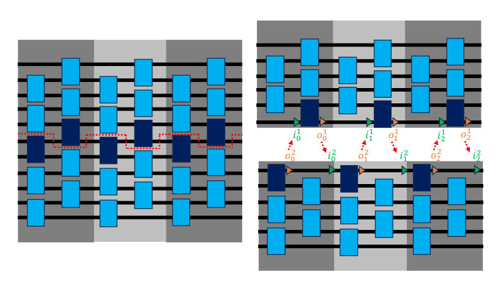
<figcaption class="paper-figure-caption"><b>Fig 1.</b> Fig. 1. A quantum circuit cut along a single qubit line. Left: full circuit. Right: resulting subcircuits. The solid lines represent qubits and the rectangles represent two qubit operators that may be composed of multiple one and two qubit gates. Operators connecting to the cut qubit are drawn darker than the others representing that they are weak. The shaded areas represent layers of the circuit. The dashed line shows the division of the circuit. Each time the dashed line crosses a qubit, a cut is made. Green triangles represent input operations, which include qubit resets and single qubit gates. Orange triangles represent output operations, which include measurement and single qubit...</figcaption>
</figure>
<figure class="paper-figure-card">
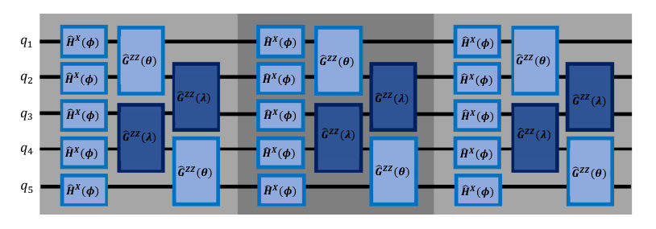
<figcaption class="paper-figure-caption"><b>Fig 2.</b> Fig. 2. Depiction of the quantum circuit used in our demonstration. Lines represent qubits and boxes represent quantum logic gates. Each shaded region represents one layer of the circuit. In each layer, there is a set of single qubit 𝐻𝑋(𝜙) gates and two qubit 𝐺𝑍𝑍(𝜃) gates. We set 𝜙= 0.1 and 𝜃= 0.5. The coupling 𝜆is varied.</figcaption>
</figure>
<figure class="paper-figure-card">

<figcaption class="paper-figure-caption"><b>Fig 3.</b> Fig. 3. Demonstration for a three layered circuit. (a) the error in the final probability for 𝐹= 00000 as a function of the coupling 𝜆to the cut qubit 𝑞3. In order of decreasing error, the curves represent 𝑛= 0, 𝑛= 1, and 𝑛= 2. (b) final contributed probability of each string combination. The inset is a magnification of the same data with horizontal lines corresponding to powers of 𝜆. (c) final contributed probability of each string combination sorted into bins of 𝑛. The horizontal lines corresponding to powers of 𝜆.</figcaption>
</figure>
<figure class="paper-figure-card">
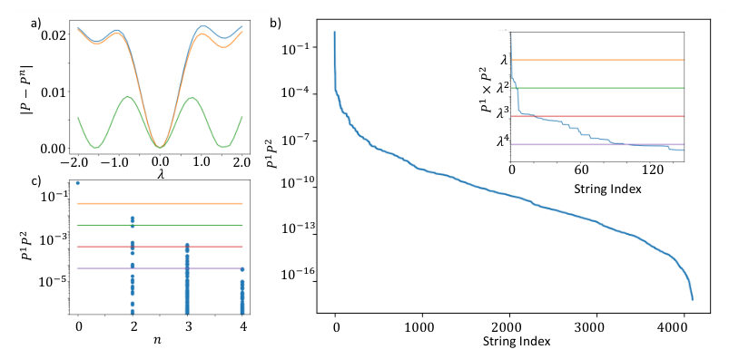
<figcaption class="paper-figure-caption"><b>Fig 4.</b> Figure 3a shows the error in the final probability of the final output 𝐹= 00000. The blue curve is for 𝑛= 0, the orange for 𝑛= 1, and the green for 𝑛= 2. We see that the error is identically 𝑃−𝑃𝑛= 0 at 𝜆= 0 in all cases. As |𝜆| is increased, so is the error. Away from 𝜆= 0, the error is reduced for larger 𝑛. Notice that the real error is much less than the general error bound, Eq. (18), with 𝛾= (𝑁𝑥𝜆)1/3. As mentioned above, the specifics of the circuit can reduce the error. In this case, there are two major factors that reduce the error. Firstly, applying a single flip cannot result in the final measurement 𝐹= 00000, and therefore there is nearly zero first order error. Secondly, as there...</figcaption>
</figure>
</div>

<p><strong>Summary.</strong> This work introduces a scalable technique called 'quantum circuit knitting' to perform distributed quantum computations. By assuming weak coupling across circuit cuts, the classical resources required scale polynomially rather than exponentially. This allows for simulating large, complex quantum circuits by decomposing them into manageable, weakly interacting sub-problems.</p>
<p><strong>Why it may be interesting.</strong> While focused on computation, the rigorous mathematical framework developed for bounding error propagation ($\epsilon_{	ext{total}}$) through weak coupling connections is highly relevant to open quantum systems where system-environment interactions are modeled perturbatively.</p>
<details>
<summary>Detailed structure</summary>
<p><strong>Main problem.</strong> The paper addresses the challenge of performing Distributed Quantum Computing (DQC) by reducing the classical information cost associated with circuit knitting.</p>
<p><strong>Main result.</strong> A method is presented that reduces the classical resource requirement from exponential to polynomial scaling by exploiting weak coupling approximations across circuit cuts.</p>
<p><strong>Method.</strong> It uses a weak-coupling approximation, modeling the quantum process as a partition between two sub-circuits connected by a single weakly coupled qubit. This allows for the derivation of transformation matrices ($\Gamma$) relating measurement probabilities.</p>
<p><strong>Model / system.</strong> The model involves general quantum circuits (e.g., those used in QAOA) that are conceptually cut along a central, weakly coupled qubit line. The analysis tracks probability evolution using symbolic string representations ($\alpha$-type and $\sigma$-type strings).</p>
<p><strong>Key observables.</strong> Approximate full-circuit probability ($P_n^F$), total error ($\epsilon_{	ext{total}}$), and the condition number of the reconstruction matrix ($\kappa_\infty(\Gamma_n)$).</p>
<p><strong>Important parameters / regimes.</strong> Coupling strength ($\lambda$) and approximation parameter ($\gamma$); the approximation level $n$ dictates the polynomial scaling of resources.</p>
<p><strong>Assumptions / limitations.</strong> The core assumption is that the coupling between the two main parts of the process via the cut qubit is weak, allowing for Taylor-like expansions in $\lambda$.</p>
<p><strong>Figures summary.</strong> Figures illustrate quantum circuits cut along a single qubit line showing input/output operations; another figure depicts a simulated 5-qubit register circuit with layers of gates.</p>
<p><strong>Paper structure.</strong> The paper develops from the weak-coupling expansion leading to commutator relations, details the positional-symbolic correspondence (PSC) for maintaining consistency between string types, and culminates in error bounding formulas that analyze the total error as a combination of approximation, hardware noise, and statistical errors.</p>
</details>
<details>
<summary>Abstract</summary>
<p>We present a method for performing distributed quantum computing with controlled approximations. Exact distributed quantum computing requires exponential classical information to reconstruct the quantum process. However, we show how the classical cost is reduced to polynomial if the quantum procedure can be partitioned between a qubit that is weakly coupled the other qubits. We demonstrate our method for a layered circuit based on the circuits used for the quantum approximate optimization algorithm.</p>
</details>
<p><sub><a href="#top">↑ back to top</a></sub></p>

<p><a id="paper-2606.18666"></a></p>
<h3 id="covert-blockwise-coding-with-sequential-detection-over-thermal-loss-bosonic-channels"><a href="http://arxiv.org/abs/2606.18666v1">Covert Blockwise Coding with Sequential Detection over Thermal-Loss Bosonic Channels</a></h3>
<p><strong>Authors:</strong> Qipeng Qian, Yuntao Qian<br>
<strong>Type:</strong> theory · <strong>Category:</strong> other · <strong>PDF:</strong> <a href="https://arxiv.org/pdf/2606.18666v1">https://arxiv.org/pdf/2606.18666v1</a><br>
<strong>Analysis basis:</strong> full PDF text, analyzed in chunks
<strong>Topic relevance:</strong> <code>quantum measurements</code> <strong>2/5</strong> · <code>Keldysh / 2PI / non-Gaussian methods</code> <strong>1/5</strong> · <code>correlated / nonlocal dissipation</code> <strong>1/5</strong> · <code>driven-dissipative phase transition</code> <strong>1/5</strong> · <code>methods for driven-dissipative</code> <strong>1/5</strong></p>
<div class="figure-strip-hint">↔ Scroll figures horizontally</div>
<div class="paper-figures-scroll">
<figure class="paper-figure-card">
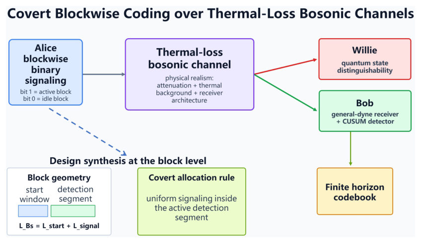
<figcaption class="paper-figure-caption"><b>Fig 1.</b> Fig. 1. Overview of the proposed blockwise signaling architecture and same-block detection design. Each block acts as a binary super-symbol, with active and idle blocks representing bits 1 and 0, respectively. Under a per-block covert budget, Willie’s side imposes a QRE-based covertness constraint, while Bob applies a physically realizable Gaussian receiver followed by a cumulative sum (CUSUM) detector to achieve same-block threshold crossing. The resulting design law determines the signaling level, detection-segment length, and blockwise binary codebook structure.</figcaption>
</figure>
<figure class="paper-figure-card">
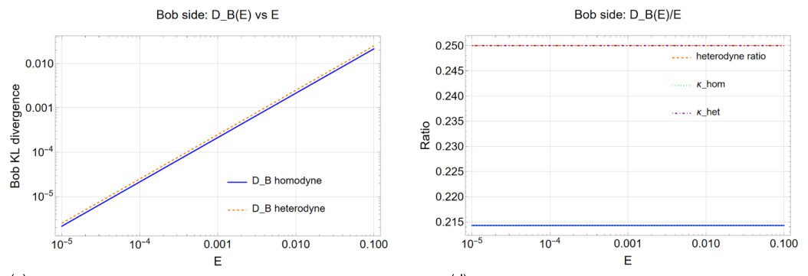
<figcaption class="paper-figure-caption"><b>Fig 2.</b> Fig. 2. Numerical verification of the small-signal laws derived in Section II-C and Section II-D. The top row validates the Willie-side quadratic law DW (E) = cW E2 + o(E2), while the bottom row validates the Bob-side linear law DB(E) = κBobE + o(E) for amplitude-sensitive Gaussian receivers. Together, the four panels confirm the basic asymmetry underlying the proposed framework: Willie’s detectability grows quadratically in the signaling energy, whereas Bob’s post-change information grows linearly.</figcaption>
</figure>
<figure class="paper-figure-card">
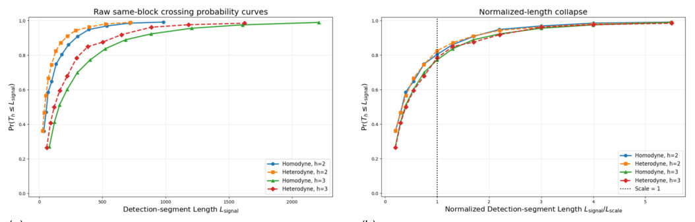
<figcaption class="paper-figure-caption"><b>Fig 3.</b> Fig. 3. Numerical validation of Corollary 2. The left panel shows the raw same-block crossing probability curves: longer detection segments improve crossing, heterodyne outperforms homodyne, and larger thresholds shift the transition to the right. The right panel shows that, after normalization by the predicted scale h2cW /(κ2 Bobδblock), the transition regions become substantially aligned. This confirms that the corollary captures the correct leading-order dependence of the minimum detection-segment length on h, cW , κBob, and δblock.</figcaption>
</figure>
</div>

<p><strong>Summary.</strong> This paper introduces the first receiver-centric framework for covert communication over noisy bosonic channels. It exploits the fundamental difference in how an eavesdropper (Willie) and a legitimate receiver (Bob) detect signals—quadratic versus linear distinguishability—to derive optimal signaling strategies. The result provides explicit design laws linking channel parameters, security budgets, and required detection segment lengths for quantum optical systems.</p>
<p><strong>Why it may be interesting.</strong> This work provides a concrete bridge between abstract information-theoretic security guarantees (covertness) and practical quantum optical engineering design rules (receiver optimization, signal processing).</p>
<details>
<summary>Detailed structure</summary>
<p><strong>Main problem.</strong> The paper develops a receiver-centric framework for covert quantum communication over thermal-loss bosonic channels, aiming to maximize detection probability while satisfying an adversary's covertness constraint.</p>
<p><strong>Main result.</strong> It derives an explicit minimum detection-segment length law that balances the linear growth of Bob's detectability against Willie's quadratic detectability using a CUSUM detector.</p>
<p><strong>Method.</strong> The authors use small-signal approximations to analyze distinguishability measures (KL divergence) and optimize energy allocation subject to covertness constraints, leading to concrete design rules for blockwise coding.</p>
<p><strong>Model / system.</strong> The system is quantum communication over thermal-loss bosonic channels. Detection relies on a physically realizable Gaussian receiver followed by a single-pass Cumulative Sum (CUSUM) detector.</p>
<p><strong>Key observables.</strong> Bob's post-change information growth (linear in signal energy, $D_B \sim E$), Willie's detectability via Quantum Relative Entropy (quadratic in signal energy, $D_W \sim E^2$), and the CUSUM crossing probability.</p>
<p><strong>Important parameters / regimes.</strong> Thermal loss ($\eta$), background brightness ($ar{n}_B$), per-block covert budget ($\delta_{	ext{block}}$), and detection segment length ($L_{	ext{signal}}$).</p>
<p><strong>Assumptions / limitations.</strong> The analysis relies heavily on small-signal regime approximations for the distinguishability measures, and assumes a Gaussian receiver readout.</p>
<p><strong>Figures summary.</strong> Figures validate the small-signal asymmetry (Willie quadratic vs. Bob linear) and confirm that the empirical same-block crossing probability scales correctly with a predicted characteristic length scale derived from system parameters.</p>
<p><strong>Paper structure.</strong> The paper builds by first establishing the physical model, deriving the asymptotic distinguishability laws for both parties, optimizing energy allocation under the covertness constraint (uniform allocation), and finally deriving the explicit minimum detection segment length required for reliable same-block detection using CUSUM theory.</p>
</details>
<details>
<summary>Abstract</summary>
<p>We develop, to our knowledge, the first receiver-centric blockwise sequential-detection framework for covert communication over thermal-loss bosonic channels. In this architecture, each block serves as a binary super-symbol, and the key design problem is to determine the minimum detection-segment length that enables Bob to detect an active block before the block ends while remaining covert to Willie. For any fixed physically realizable general-dyne receiver, Bob's post-change information growth is linear in the small-signal regime, whereas Willie's detectability obeys a quadratic quantum relative entropy law. Exploiting this asymmetry, we show that under a per-block covertness budget the asymptotically optimal signaling strategy is uniform across the detection segment, and we derive an explicit minimum-length condition under which a single-pass cumulative sum (CUSUM) detector crosses threshold within the same block with exponentially high probability. The resulting design law yields a covert blockwise binary codebook over a finite transmission horizon and establishes a concrete link between bosonic covert communication, sequential detection, and blockwise signaling design. More broadly, these results provide design guidance for covert quantum communication systems with physically realizable receivers, and help bridge information-theoretic covertness guarantees with implementable receiver-aware optical communication design.</p>
</details>
<p><sub><a href="#top">↑ back to top</a></sub></p>

<p><a id="paper-2606.18769"></a></p>
<h3 id="role-of-local-structural-variation-in-x-ray-photoelectron-spectrum-of-silicon-oxide-interfaces"><a href="http://arxiv.org/abs/2606.18769v1">Role of Local Structural Variation in X-ray Photoelectron Spectrum of Silicon Oxide Interfaces</a></h3>
<p><strong>Authors:</strong> Mikael Santonen, Sari Granroth, Johanna Laaksonen, Pekka Laukkanen, Johannes Niskanen<br>
<strong>Type:</strong> both · <strong>Category:</strong> disordered systems and neural networks · <strong>PDF:</strong> <a href="https://arxiv.org/pdf/2606.18769v1">https://arxiv.org/pdf/2606.18769v1</a><br>
<strong>Analysis basis:</strong> full PDF text, analyzed in chunks
<strong>Topic relevance:</strong> <code>non-equilibrium dynamics</code> <strong>2/5</strong> · <code>Keldysh / 2PI / non-Gaussian methods</code> <strong>1/5</strong> · <code>driven-dissipative phase transition</code> <strong>1/5</strong> · <code>methods for driven-dissipative</code> <strong>1/5</strong> · <code>non-equilibrium universality</code> <strong>1/5</strong></p>
<div class="figure-strip-hint">↔ Scroll figures horizontally</div>
<div class="paper-figures-scroll">
<figure class="paper-figure-card">
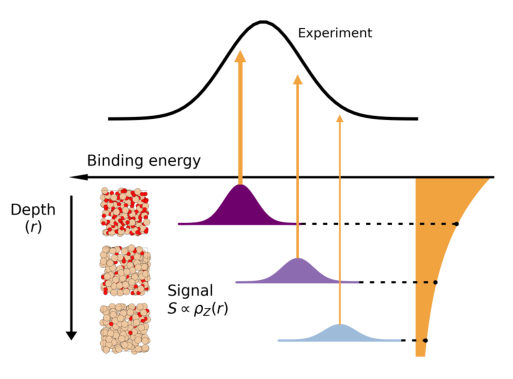
<figcaption class="paper-figure-caption"><b>Fig 1.</b> FIG. 1. The build-up of an X-ray photoelectron spectrum in surface-oxidized silicon. The chemical shift for an atom depends on the local oxygen number density ρO(r), which decays towards bulk silicon. In case of oxygen, the native sig- nal strength at depth r is inherently proportional to ρO(r), whereas for silicon the respective number density ρSi(r) and native signal strength vary less. Attenuation due to inelastic electron scattering yields an exponentially decaying factor for the native signal in the depth-integrated spectrum. The free mean path λph of the incident photon is assumed to be or- ders of magnitude longer than the free mean path λel of the photoelectron.</figcaption>
</figure>
<figure class="paper-figure-card">
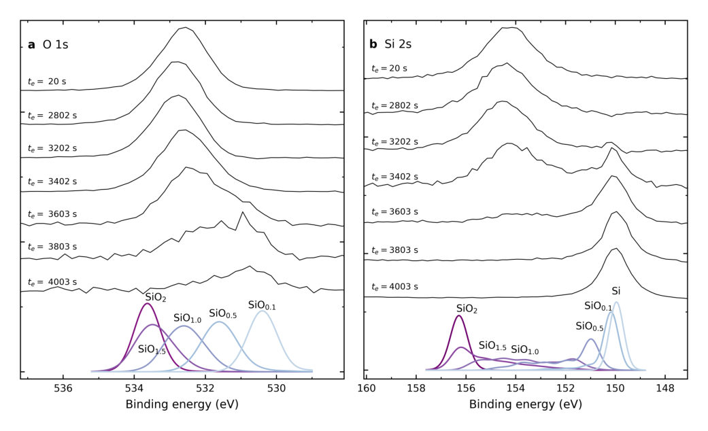
<figcaption class="paper-figure-caption"><b>Fig 2.</b> FIG. 2. Processed layer-wise spectra for O 1s (a) and Si 2s (b) derived from observed raw X-ray photoelectron spectra for sputtered silicon oxide is shown on top with te showing the etch time of the topmost raw specrum in the reconstruction. The layer-wise spectra were binned with consecutive pairs to reduce noise. Simulated ensemble-averaged O 1s and Si 2s spectra for different compositions of SiOx and pure Si are shown in the bottom. The simulated spectra have been shifted by 4.0 eV (O 1s) and 12.0 eV (Si 2s) towards the experimental peaks. 5000 sites were calculated for each composition with sites from tens anneal runs for each. A weak plasmon loss peak from the Si 2p overlaps with the...</figcaption>
</figure>
<figure class="paper-figure-card">
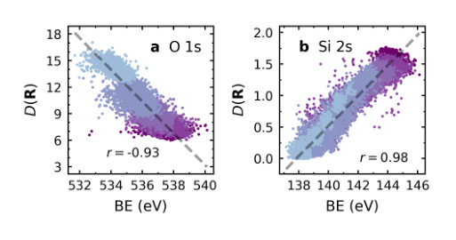
<figcaption class="paper-figure-caption"><b>Fig 3.</b> FIG. 3. The dependence of the O 1s (a) and Si 2s (b) binding energies on the local atomistic environment descriptor D(R) shows a clear correlation. The opposite trends originate from a different element being used in the respective descriptor. The colors correspond with the peaks in Figure 2. For details, see text.</figcaption>
</figure>
<figure class="paper-figure-card">
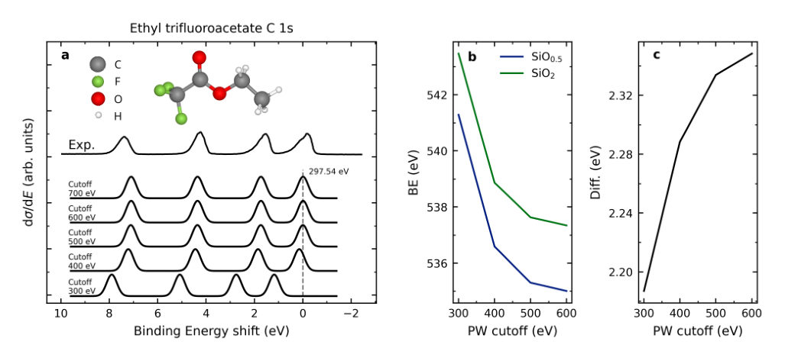
<figcaption class="paper-figure-caption"><b>Fig 4.</b> FIG. 4. C 1s binding energy shifts in the ethyl-trifluoroacetate (a), i.e. the ”ESCA molecule”, evaluated as a function of the plane wave cutoff. Experimental XPS digitized from [O. Travnikova, K. J. Børve, M. Patanen, J. S¨oderstr¨om, C. Miron, L. J. Sæthre, N. M˚artensson, and S. Svensson, Journal of Electron Spectroscopy and Related Phenomena 185, 191 (2012)] is shown for comparison. Absolute binding energies (b) in SiO0.5 &amp; SiO2 and binding energy shifts (c) between the two SiOx evaluated as a function of the plane wave cutoff.</figcaption>
</figure>
<figure class="paper-figure-card">
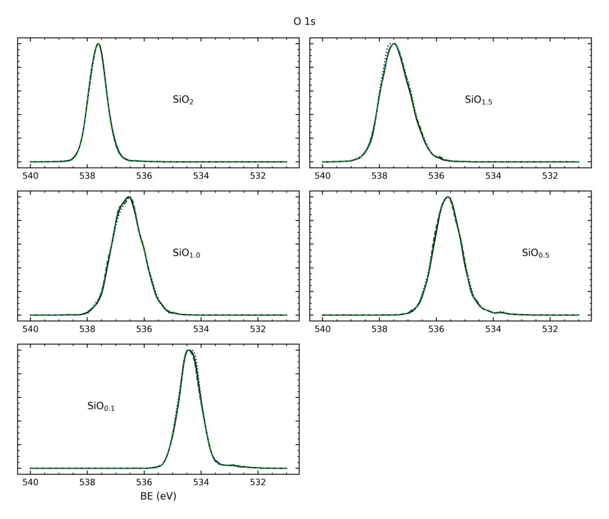
<figcaption class="paper-figure-caption"><b>Fig 5.</b> FIG. 5. The black solid line shows the resulting O 1s XPS spectrum for each SiOx system from 5000 calculated binding energies broadened with 0.5 eV FWHM Gaussians . The two dashed lines in color show spectra from 2500 BEs each.</figcaption>
</figure>
</div>

<p><strong>Summary.</strong> This work investigates how structural randomness in silicon oxide interfaces broadens X-ray photoelectron spectra. By combining MD simulations with DFT calculations, the authors show that spectral broadening results not from multiple distinct chemical states, but from a continuous statistical distribution of binding energies dictated by local atomic arrangements.</p>
<p><strong>Why it may be interesting.</strong> While focused on solid-state spectroscopy, the methodology of linking macroscopic spectroscopic features to underlying statistical distributions arising from quenched disorder is highly relevant to understanding complex many-body systems where local environments dictate global properties.</p>
<details>
<summary>Detailed structure</summary>
<p><strong>Main problem.</strong> The study challenges conventional chemical state assignments in oxide X-ray photoelectron spectra by demonstrating that core-level binding energies arise from a continuous distribution governed by local structural variation.</p>
<p><strong>Main result.</strong> Statistical simulations successfully reproduce the observed spectral broadening, showing that intermediate stoichiometry regions exhibit wide energy spreads rather than distinct, discrete spectral fingerprints.</p>
<p><strong>Method.</strong> The research combines Density Functional Theory (DFT) calculations with Molecular Dynamics (MD) simulations to generate ensemble averages of core-level binding energies from amorphous silicon oxide structures.</p>
<p><strong>Model / system.</strong> The system under investigation is the $ ext{SiOx}$ interface, modeled using supercells derived from MD quench simulations spanning varying oxygen concentrations ($x$). The analysis focuses on how local structural disorder influences electronic properties.</p>
<p><strong>Key observables.</strong> Core-level binding energies ($ ext{O } 1s$ and $   ext{Si } 2s$), spectral broadening (up to $5 	ext{ eV}$), depth profiles reconstructed from sputtering, and structural descriptors like the void distribution curve.</p>
<p><strong>Important parameters / regimes.</strong> The analysis is sensitive to local structure variations over a radius of approximately $5 	ext{ Å}$, and simulations cover compositions from pure Si to $    ext{SiO}_2$.</p>
<p><strong>Assumptions / limitations.</strong> Key assumptions include treating the observed spectrum as an integral over underlying layers (sputtering model) and assuming constant ionization cross-sections for DFT calculations.</p>
<p><strong>Figures summary.</strong> Figures illustrate conceptual XPS build-up, layer-resolved spectra comparisons with simulations, correlation plots between BE shifts and structural descriptors ($D(R)$), and void size distributions for $   ext{SiO}_2$.</p>
<p><strong>Paper structure.</strong> The paper progresses by establishing the experimental challenge (XPS interpretation in disordered oxides), developing simulation tools (DFT/MD), quantifying the structural disorder using descriptors, and finally demonstrating that this continuous variation explains the observed spectral broadening.</p>
</details>
<details>
<summary>Abstract</summary>
<p>We show that the broad X-ray photoelectron lines of silicon oxide on silicon arise from a continuous statistical distribution of core-level binding energies. Statistical simulations spanning compositions from Si to SiO$_2$ reproduce the full extent of this broadening, reaching 5 eV for SiO$_{1.0}$ , in quantitative agreement with 0.23 nm layer-resolved spectra reconstructed from Ar$^+$ sputtering data. This continuous distribution blurs distinct spectral fingerprints of local structural motifs, thereby challenging conventional chemical state assignment in oxide X-ray photoelectron spectra.</p>
</details>
<p><sub><a href="#top">↑ back to top</a></sub></p>

<p><a id="paper-2606.18973"></a></p>
<h3 id="emergence-of-resonating-valence-bond-correlations-in-stretched-graphene"><a href="http://arxiv.org/abs/2606.18973v1">Emergence of Resonating Valence-Bond Correlations in Stretched Graphene</a></h3>
<p><strong>Authors:</strong> Sam Azadi, A. Principi, T. D. Kühne, M. S. Bahramy<br>
<strong>Type:</strong> theory · <strong>Category:</strong> strongly correlated electrons · <strong>PDF:</strong> <a href="https://arxiv.org/pdf/2606.18973v1">https://arxiv.org/pdf/2606.18973v1</a><br>
<strong>Analysis basis:</strong> full PDF text, analyzed in chunks
<strong>Topic relevance:</strong> <code>analog quantum simulation</code> <strong>2/5</strong> · <code>exotic spin models in light-matter</code> <strong>1/5</strong></p>
<div class="figure-strip-hint">↔ Scroll figures horizontally</div>
<div class="paper-figures-scroll">
<figure class="paper-figure-card">
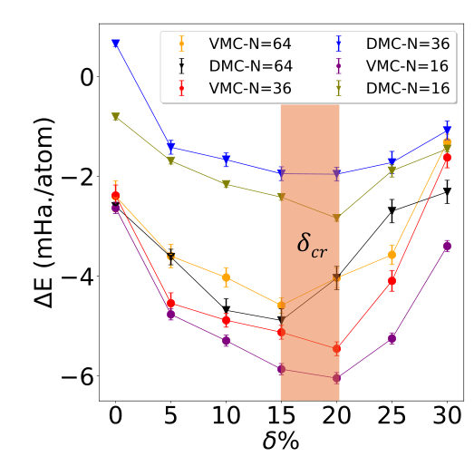
<figcaption class="paper-figure-caption"><b>Fig 1.</b> FIG. 1. Energy difference ∆E = EJAGP −EJSD as a func- tion of in-plane biaxial strain δ, obtained from VMC and DMC calculations for system sizes N = 16, 36, and 64 atoms. The shaded region indicates the critical strain δcr, where ∆E reaches its minimum; for δ &gt; δcr, ∆E increases with further stretching. The nonmonotonic behavior reflects the enhance- ment of static, RVB-like singlet correlations up to δcr, followed by a crossover to a different correlation regime at larger strain.</figcaption>
</figure>
<figure class="paper-figure-card">
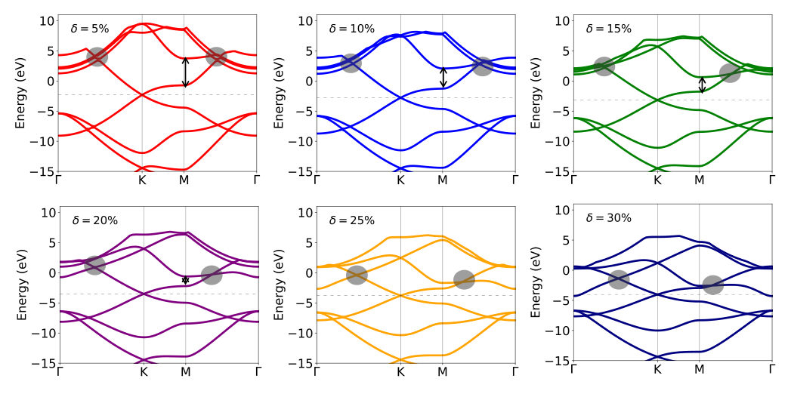
<figcaption class="paper-figure-caption"><b>Fig 2.</b> FIG. 2. DFT band structure of graphene obtained at biaxial stretch δ = 5%, 10%, 15%, 15%, 20%, 25%, 30%. The shaded regions in the conduction bands along the M–Γ and K–Γ directions highlight the crossings between the π∗and σ∗bands. The evolution of these crossings with increasing δ is shown. The arrow at the M point indicates the gap between the two lowest conduction bands, which decreases with increasing δ due to the reduced slope and flattening of the π∗band.</figcaption>
</figure>
<figure class="paper-figure-card">
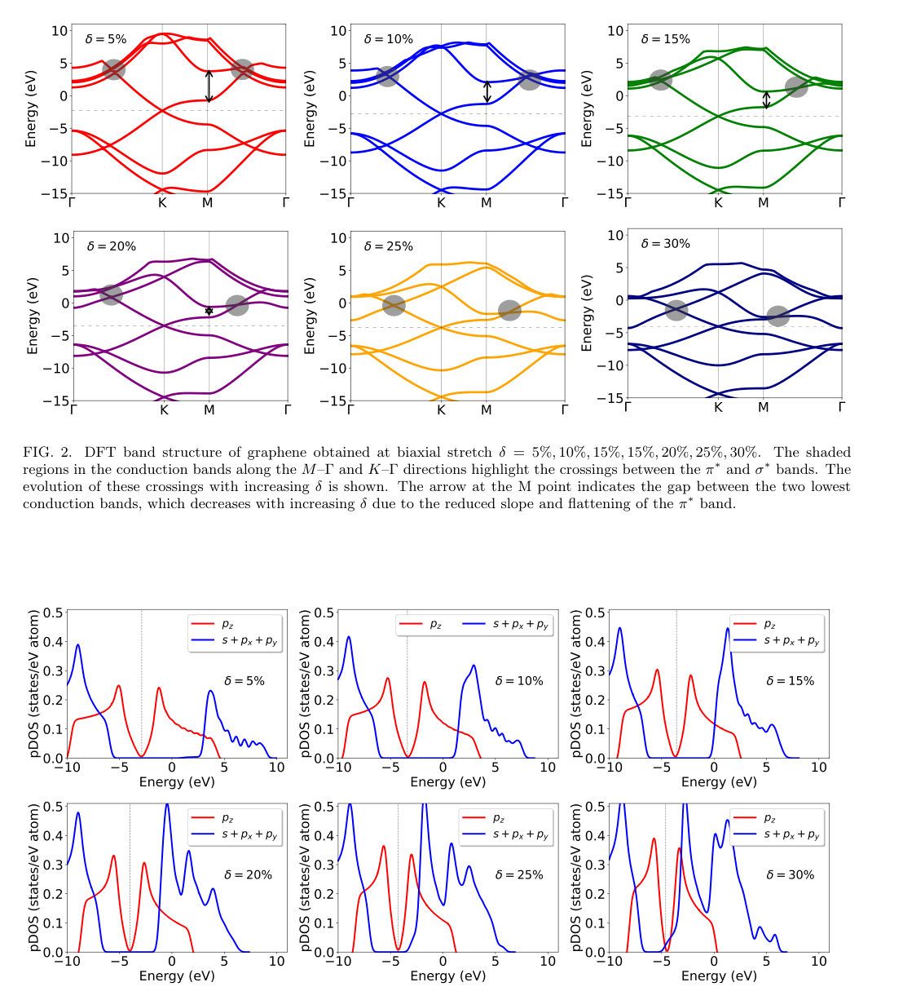
<figcaption class="paper-figure-caption"><b>Fig 3.</b> FIG. 3. DFT project density of states (pDOS) of graphene obtained at biaxial stretch δ = 5%, 10%, 15%, 15%, 20%, 25%, 30%.</figcaption>
</figure>
<figure class="paper-figure-card">
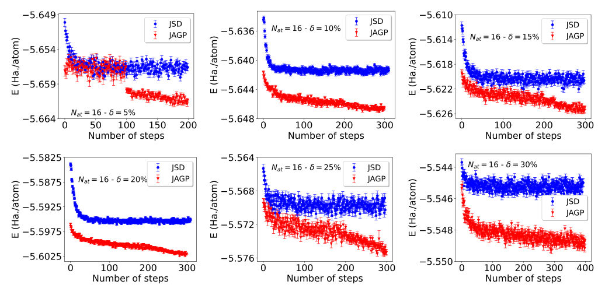
<figcaption class="paper-figure-caption"><b>Fig 4.</b> FIG. 4. VMC energy as a function of the number of optimization steps computed using JSD and JAGP wave functions for system size N=16.</figcaption>
</figure>
<figure class="paper-figure-card">
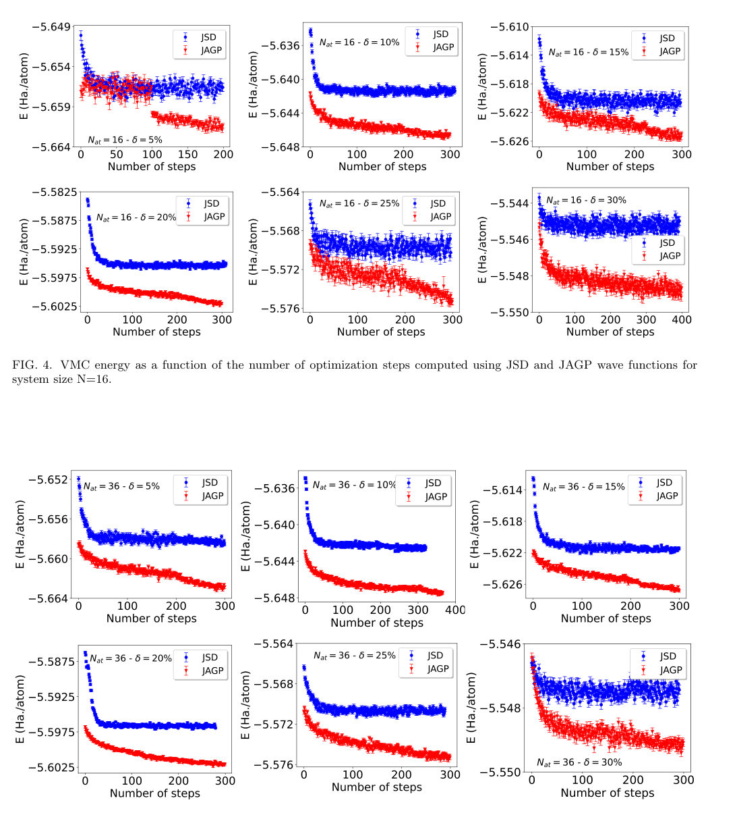
<figcaption class="paper-figure-caption"><b>Fig 5.</b> FIG. 5. VMC energy as a function of the number of optimization steps computed using JSD and JAGP wave functions for system size N=36.</figcaption>
</figure>
</div>

<p><strong>Summary.</strong> The research uses advanced Quantum Monte Carlo methods to study how tensile strain affects electron correlations in graphene. By comparing standard and Resonating Valence Bond (RVB) wave functions, the authors find that stretching the lattice enhances correlation effects up to a critical strain ($\delta_{cr}$). This demonstrates a tunable pathway to stabilize highly correlated electronic states in Dirac materials.</p>
<p><strong>Why it may be interesting.</strong> This work provides direct, quantitative evidence that external mechanical tuning (strain) can be used as a simple knob to tune fundamental electronic interactions in Dirac materials, potentially stabilizing exotic correlated phases like those described by RVB theory.</p>
<details>
<summary>Detailed structure</summary>
<p><strong>Main problem.</strong> To determine how tensile strain modifies electronic correlations in graphene, potentially driving a transition into a regime dominated by Resonating Valence Bond (RVB) physics.</p>
<p><strong>Main result.</strong> Tensile expansion enhances RVB-like singlet correlations up to a critical strain ($\delta_{cr} \approx 15\% - 20\%$), where the energy gain of the RVB ansatz peaks, indicating a nonmonotonic evolution of correlation strength.</p>
<p><strong>Method.</strong> Variational and Diffusion Quantum Monte Carlo (VMC/DMC) simulations are used to calculate ground state energies by comparing two wave function ansätze: a standard Jastrow-Slater determinant and an RVB-based Geminal Product ansatz.</p>
<p><strong>Model / system.</strong> The system is graphene, modeled on its honeycomb lattice. The study investigates the effect of biaxial tensile strain ($\delta$) on the electronic correlation energy, treating electron interactions beyond simple mean-field approximations.</p>
<p><strong>Key observables.</strong> Energy gain ($\Delta E = E_{	ext{RVB}} - E_{	ext{JSD}}$) as a function of strain $\delta$; band structure renormalization (pDOS); total ground state energy.</p>
<p><strong>Important parameters / regimes.</strong> Tensile strain ($\delta$); Critical Strain ($\delta_{cr}$) in the $15\% < \delta_{cr} < 20\%$ range; System sizes ($N=16, 36, 64$).</p>
<p><strong>Assumptions / limitations.</strong> The use of fixed-node approximation in DMC; The necessity of using an RVB ansatz (JAGP) to capture static correlation effects neglected by single-determinant forms.</p>
<p><strong>Figures summary.</strong> Figures illustrate the energy gain ($\Delta E$) vs. strain, showing nonmonotonic behavior with a peak/crossover point at $\delta_{cr}$. Tables present calculated total energies using both JSD and JAGP wave functions across various strains.</p>
<p><strong>Paper structure.</strong> The paper systematically calculates ground state properties (energy) for graphene under increasing biaxial strain ($\delta$) by comparing the results from two increasingly sophisticated quantum many-body wave function ansätze (JSD vs. RVB/AGP), revealing a critical transition point.</p>
</details>
<details>
<summary>Abstract</summary>
<p>Electronic correlations in graphene are generally considered weak due to the large bandwidth of its $π$ electrons. Here we show that tensile expansion of the honeycomb lattice provides a direct route to enhancing correlation effects. Using variational and diffusion quantum Monte Carlo, we compare a conventional Jastrow-Slater determinant wave function with a resonating-valence-bond (RVB) Jastrow-antisymmetrized geminal product ansatz for a series of stretched graphene lattices. We find that the energy gain of the RVB state relative to the single-determinant description increases with bond expansion up to a critical strain $δ_{\mathrm{cr}}$, and decreases beyond it, revealing a nonmonotonic evolution of electronic correlations. The crossover is found to occur in the range $15\% < δ_{\mathrm{cr}} < 20\%$, in agreement with mechanical stability limits. This behavior indicates a transition from a weakly correlated Dirac semimetal to a regime with enhanced non-dynamic correlation and short-range singlet pairing. Our results provide direct many-body evidence that lattice expansion drives graphene into a regime where RVB-like correlations become energetically favorable, offering a simple route to tuning correlation effects in Dirac materials.</p>
</details>
<p><sub><a href="#top">↑ back to top</a></sub></p>

<p><a id="paper-2606.18914"></a></p>
<h3 id="benchmark-of-pauli-correlation-encoding-for-different-optimisation-problems"><a href="http://arxiv.org/abs/2606.18914v1">Benchmark of Pauli Correlation Encoding for different optimisation problems</a></h3>
<p><strong>Authors:</strong> Fernando Alonso, Colomán Samprón, Jacobo Veiga, Mariamo Mussa Juane, Andrés Gómez<br>
<strong>Type:</strong> both · <strong>Category:</strong> quantum information and computing · <strong>PDF:</strong> <a href="https://arxiv.org/pdf/2606.18914v1">https://arxiv.org/pdf/2606.18914v1</a><br>
<strong>Analysis basis:</strong> full PDF text, analyzed in chunks
<strong>Topic relevance:</strong> <code>QC/QI experiment</code> <strong>2/5</strong></p>
<div class="figure-strip-hint">↔ Scroll figures horizontally</div>
<div class="paper-figures-scroll">
<figure class="paper-figure-card">
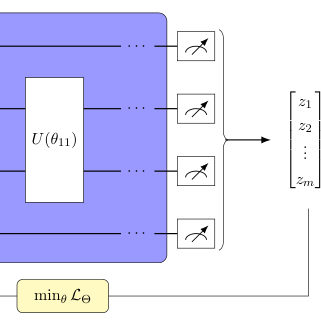
<figcaption class="paper-figure-caption"><b>Fig 1.</b> Figure 1: Schematic of the quantum circuit used to construct the PQC.</figcaption>
</figure>
<figure class="paper-figure-card">
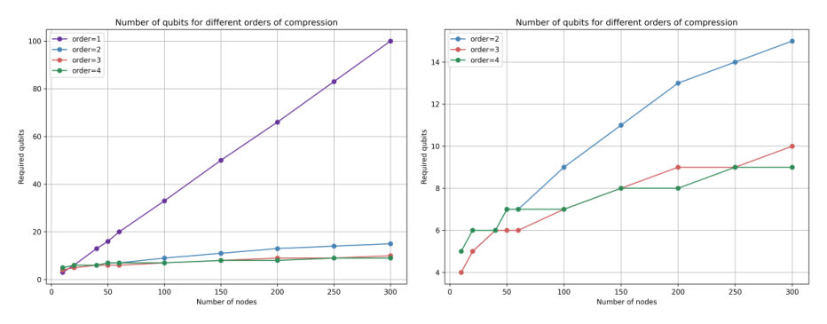
<figcaption class="paper-figure-caption"><b>Fig 2.</b> Figure 2: Scaling of the number of qubits as a function of the number of variables for MCP.</figcaption>
</figure>
<figure class="paper-figure-card">
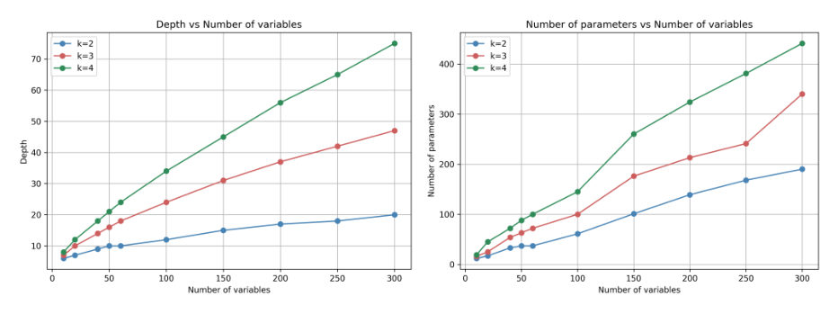
<figcaption class="paper-figure-caption"><b>Fig 3.</b> Figure 3: Scaling of the number of layers and parameters under the assumed configuration.</figcaption>
</figure>
<figure class="paper-figure-card">
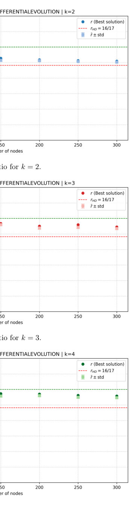
<figcaption class="paper-figure-caption"><b>Fig 4.</b> Figure 4: Results obtained using regularisation for the 10 MCP instances.</figcaption>
</figure>
<figure class="paper-figure-card">
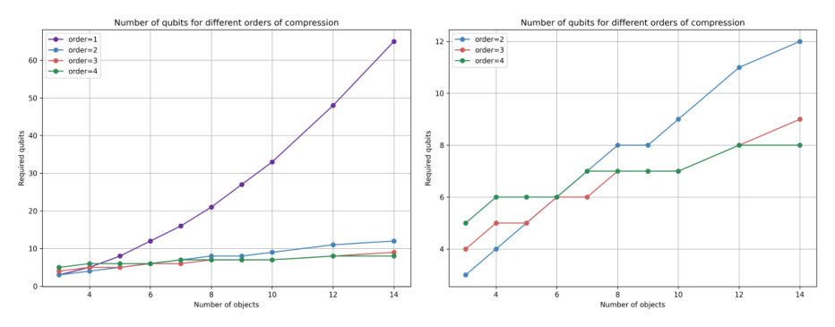
<figcaption class="paper-figure-caption"><b>Fig 5.</b> Figure 5: Scaling of the number of qubits as a function of the number of variables for the BPP.</figcaption>
</figure>
</div>

<p><strong>Summary.</strong> This paper rigorously benchmarks Pauli Correlation Encoding (PCE) as an efficient method to map large combinatorial optimization problems onto small qubit systems. By testing on multiple NP-hard instances and analyzing noise effects, it demonstrates that PCE offers a scalable quantum approach with performance competitive to classical solvers. The work provides critical guidance on parameter tuning required for near-term quantum hardware.</p>
<p><strong>Why it may be interesting.</strong> It provides a detailed roadmap for applying quantum computation principles—specifically encoding techniques like PCE—to classically hard optimization problems, offering insights into the necessary parameter regimes for near-term devices.</p>
<details>
<summary>Detailed structure</summary>
<p><strong>Main problem.</strong> The work evaluates a quantum-classical optimization framework using Pauli Correlation Encoding (PCE) to solve complex combinatorial optimization problems like Max Cut, Bin Packing, and TSP.</p>
<p><strong>Main result.</strong> The PCE-based framework achieves competitive performance on benchmark problems, demonstrating that higher compression orders ($k$) improve solution quality by enhancing expressive capacity, even when considering hardware noise effects.</p>
<p><strong>Method.</strong> Optimization is performed by minimizing a cost function over parameters ($\vec{\Theta}$) applied to a Parametrised Quantum Circuit (PQC), often using gradient-free optimizers like Differential Evolution (DE).</p>
<p><strong>Model / system.</strong> The model uses Pauli strings ($\Pi$) to encode $m$ binary variables onto a polynomial number ($n$) of qubits, forming the basis for variational quantum circuits with hardware-efficient ansatze.</p>
<p><strong>Key observables.</strong> Solution ratio (comparing achieved cost to best known/max), feasibility rate of solutions, and quantitative metrics like mean/min row max and gap derived from relaxed variables.</p>
<p><strong>Important parameters / regimes.</strong> Compression order ($k$), relaxation hyperparameters ($\alpha$, $eta$), penalty weights ($\lambda_i$), number of shots, and noise levels (ideal vs. noisy backend).</p>
<p><strong>Assumptions / limitations.</strong> The performance heavily relies on careful calibration of numerous hyperparameters; the analysis often assumes a specific ansatz structure and uses post-processing heuristics to refine solutions.</p>
<p><strong>Figures summary.</strong> Figures compare solution ratios across different compression orders ($k$) for MCP, show scaling of qubits vs. variables for BPP/TSP, and use heatmaps to visualize how penalty parameters affect variable separation metrics (e.g., meangap).</p>
<p><strong>Paper structure.</strong> The paper systematically benchmarks PCE on multiple problems (MCP, BPP, TSP), analyzing the impact of compression order ($k$), noise models, post-processing steps (like 2-opt for TSP), and hyperparameter tuning ($\alpha, eta$) to establish performance boundaries.</p>
</details>
<details>
<summary>Abstract</summary>
<p>The continuous progress of quantum technologies has spurred the exploration of their potential applications across diverse fields, particularly in combinatorial optimisation. In this work, we study a quantum-classical optimisation framework based on Pauli Correlation Encoding, an encoding scheme that can represent m binary variables using a polynomial number of qubits. To evaluate the performance of the method, we use four classical optimisation problems against the instances of the QOPTLib benchmark. The study includes an analysis of the impact of the compression order of the encoding scheme, the problem structure, and hyperparameter selection on solution quality, as well as the role of post-processing in improving performance. Additionally, we study the effect of shot-based execution and hardware noise, showing how these factors influence both the accuracy of expected value estimation and the overall dynamics of the optimisation process. The results indicate that the proposed PCE-based framework achieves competitive performance against the benchmark and, in several cases, obtains equivalent or even superior solutions, highlighting its potential as an efficient encoding strategy for quantum optimisation in the NISQ and near fault-tolerant era.</p>
</details>
<p><sub><a href="#top">↑ back to top</a></sub></p>

<p><a id="paper-2606.18752"></a></p>
<h3 id="self-averaging-of-replica-overlaps-in-the-random-field-edwards-anderson-model"><a href="http://arxiv.org/abs/2606.18752v1">Self-averaging of replica overlaps in the random field Edwards-Anderson model</a></h3>
<p><strong>Authors:</strong> C. Itoi, Y. Sakamoto<br>
<strong>Type:</strong> theory · <strong>Category:</strong> disordered systems and neural networks · <strong>PDF:</strong> <a href="https://arxiv.org/pdf/2606.18752v1">https://arxiv.org/pdf/2606.18752v1</a><br>
<strong>Analysis basis:</strong> full PDF text, analyzed in chunks
<strong>Topic relevance:</strong> <code>Keldysh / 2PI / non-Gaussian methods</code> <strong>1/5</strong> · <code>analog quantum simulation</code> <strong>1/5</strong> · <code>exotic spin models in light-matter</code> <strong>1/5</strong></p>
<div class="figure-strip-hint">↔ Scroll figures horizontally</div>
<div class="paper-figures-scroll">
<figure class="paper-figure-card">
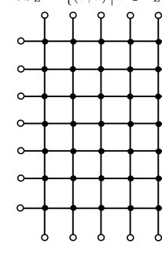
<figcaption class="paper-figure-caption"><b>Fig 1.</b> Figure 1: Black dots and white dots represent the sites in Λ7 and its boundary ∂Λ7, respectively. Solid lines represent bonds in B7 and ∂B7. Assume that an Ising spin described by the spin variable σx ∈{1, −1} sits at each site x ∈ΛL. A spin configuration, i.e., the collection of all spin variables on ΛL, is denoted as σ = (σx)x∈ΛL, and CL denotes the set of all spin configurations on ΛL. The boundary spin at each boundary site u ∈∂ΛL is described by a continuous variable bu ∈[−1, 1]. The collection of all bu for u ∈∂ΛL is denoted as b = (bu)u∈∂ΛL, and the set of all b is denoted as ∂CL. For any x, y ∈Zd such that |x −y| = 1, let Jx,y = Jy,x ∈R be a random exchange interaction between sites x...</figcaption>
</figure>
<figure class="paper-figure-card">
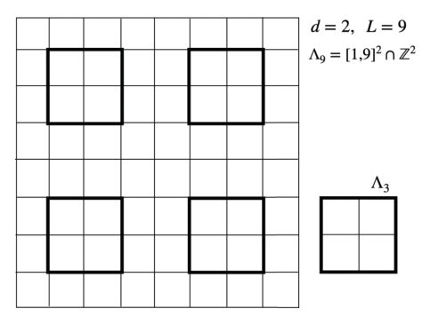
<figcaption class="paper-figure-caption"><b>Fig 2.</b> Figure 2: Four translated copies of Λ3 are embedded into Λ9. This corresponds to the optimal choice (4.35).</figcaption>
</figure>
</div>

<p><strong>Summary.</strong> This paper rigorously proves that the replica overlap in the random field Edwards-Anderson spin glass model exhibits self-averaging in the infinite volume limit. This is achieved by relating order parameters to derivatives of the free energy density and employing sophisticated mathematical inequalities. The result confirms a specific behavior for finite-dimensional disordered systems, distinguishing them from mean-field models.</p>
<p><strong>Why it may be interesting.</strong> While focused on classical spin glasses, the mathematical techniques used for analyzing quenched disorder and replica symmetry breaking are foundational tools in modern statistical physics that can inform theories of quantum disordered systems or complex energy landscapes relevant to AMO physics.</p>
<details>
<summary>Detailed structure</summary>
<p><strong>Main problem.</strong> The central problem is proving the self-averaging of the replica overlap in the Edwards-Anderson (EA) spin glass model when subjected to a random external field.</p>
<p><strong>Main result.</strong> The variance of the replica overlap is proven to vanish in the infinite-volume limit for almost all coupling constants, establishing self-averaging properties for this disordered system.</p>
<p><strong>Method.</strong> The proof utilizes advanced techniques involving derivatives of the free energy density with respect to the random field strength and relies on correlation inequalities (like Tasaki's) to bound the variance terms.</p>
<p><strong>Model / system.</strong> The study focuses on the Edwards-Anderson (EA) spin glass model, defined by a Hamiltonian incorporating quenched random couplings ($J_{x,y}$) and an external random magnetic field ($h_g$). The analysis is performed in the thermodynamic limit (infinite volume).</p>
<p><strong>Key observables.</strong> Replica overlap ($R_{\alpha,eta}^L$), Edwards-Anderson (EA) order parameter ($q_{EA}$), and the free energy density ($\varphi_L$).</p>
<p><strong>Important parameters / regimes.</strong> Temperature ($eta$), random field strength ($h_g$), system dimension ($d$), and the infinite volume limit ($L 	o \infty$).</p>
<p><strong>Assumptions / limitations.</strong> The proof requires that the free energy density be independent of boundary conditions for the random field EA model, and it is restricted to short-range interactions.</p>
<p><strong>Figures summary.</strong> Figure 1 illustrates a lattice structure ($\Lambda_7$) and its boundary ($\partial\Lambda_7$) in two dimensions ($d=2$).</p>
<p><strong>Paper structure.</strong> The paper develops the theory by relating order parameters to derivatives of the free energy density, proving self-averaging theorems using correlation inequalities, and contrasting these findings with mean-field models like SK.</p>
</details>
<details>
<summary>Abstract</summary>
<p>The self-averaging of the replica overlap is proven in the Edwards-Anderson (EA) model under random field almost everywhere in the coupling constant space in any dimension. The EA order parameter is represented in terms of the derivative of the free energy density with respect to the random field strength, regardless of boundary conditions. Tasaki's correlation inequality for finite-dimensional spin glass models shows that the expectation of the squared replica overlap is bounded by the squared EA order parameter. These simple evaluations enable us to prove that the variance of the replica overlap vanishes in the infinite-volume limit. The self-averaging of the replica bond overlap is proven also in the EA model with Gaussian exchange interaction without random field. Short-range spin glass models have been shown to behave differently from mean-field spin glass models with RSB phase.</p>
</details>
<p><sub><a href="#top">↑ back to top</a></sub></p>

<p><a id="paper-2606.18647"></a></p>
<h3 id="trion-hall-effect-in-electron-hole-double-layers"><a href="http://arxiv.org/abs/2606.18647v1">Trion Hall effect in electron-hole double layers</a></h3>
<p><strong>Authors:</strong> Raghav Chaturvedi, Phuong X. Nguyen, Patrick Knüppel, Kenji Watanabe, Takashi Taniguchi, Kin Fai Mak, Jie Shan<br>
<strong>Type:</strong> experiment · <strong>Category:</strong> strongly correlated electrons · <strong>PDF:</strong> <a href="https://arxiv.org/pdf/2606.18647v1">https://arxiv.org/pdf/2606.18647v1</a><br>
<strong>Analysis basis:</strong> full PDF text, analyzed in chunks
<strong>Topic relevance:</strong> <code>analog quantum simulation</code> <strong>1/5</strong> · <code>correlated cavity matter</code> <strong>1/5</strong> · <code>spintronics-quantum-optics interface</code> <strong>1/5</strong></p>
<div class="figure-strip-hint">↔ Scroll figures horizontally</div>
<div class="paper-figures-scroll">
<figure class="paper-figure-card">
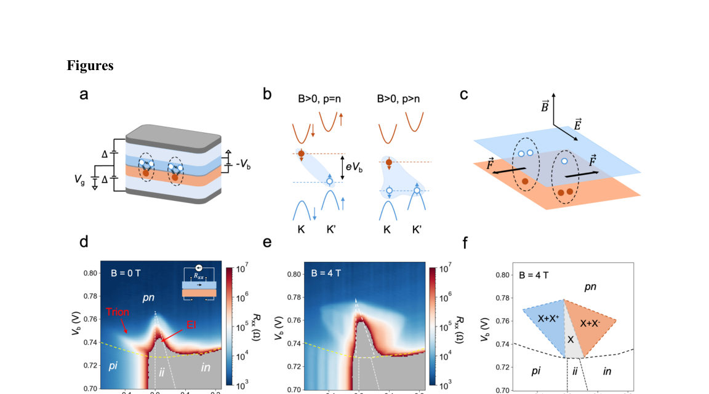
<figcaption class="paper-figure-caption"><b>Fig 1.</b> Figure 1 | Trions in Coulomb-coupled electron-hole double layers. a, Schematic dual-gated device structure supporting trions (three-particle bound states encircled by dashed lines). The electron (orange) and hole (blue) layers are separated by a thin (≈2nm) hBN barrier in the channel. 𝑉&quot; and Δ denote the symmetric and antisymmetric combination of the gate voltages, respectively; 𝑉! is the bias voltage applied to the Mo-layer. b, Schematic type-II band alignment under a finite magnetic field with spin- and valley-split Mo-conduction bands (orange) and W-valence bands (blue). The electron- and hole-Fermi levels are split by 𝑒𝑉!. Excitons form when their binding energy exceeds the interlayer...</figcaption>
</figure>
<figure class="paper-figure-card">
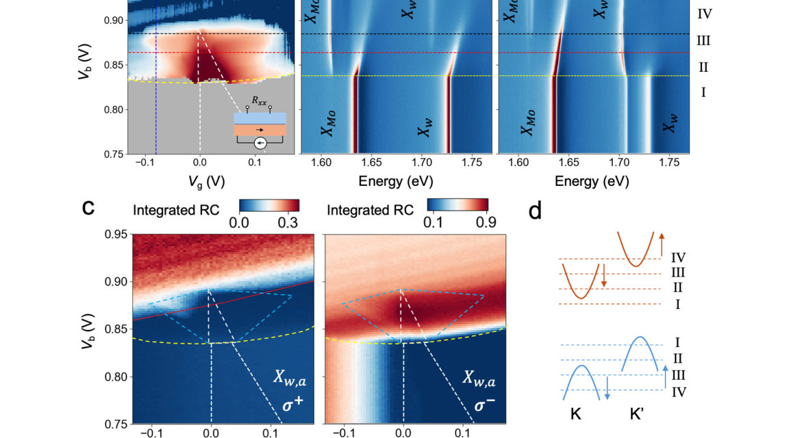
<figcaption class="paper-figure-caption"><b>Fig 2.</b> Figure 2 | Phase diagram under finite magnetic fields. a, 𝑅(((+,-&quot;) as a function of 𝑉&quot; and 𝑉! at 𝐵= 6T and 𝑇= 1.5K (device 3). Schematic measurement configuration is shown in the inset. b, Reflection contrast (RC) spectra in the 𝜎&#x27; (left) and 𝜎$ (right) channels measured along the blue dashed line in a. 𝑋P(QR) and 𝑋P(QR),- denote the neutral exciton (or repulsive polaron) and the attractive polaron resonances in the W(Mo)-layer, respectively. Red and black dashed lines mark the onset of occupation of both valleys in the W- and Mo-layers, respectively; yellow dashed line marks the onset of the pn region. Equilibrium positive trions (with large 𝑅(((+,-&quot;)) emerge only in between the red and...</figcaption>
</figure>
<figure class="paper-figure-card">
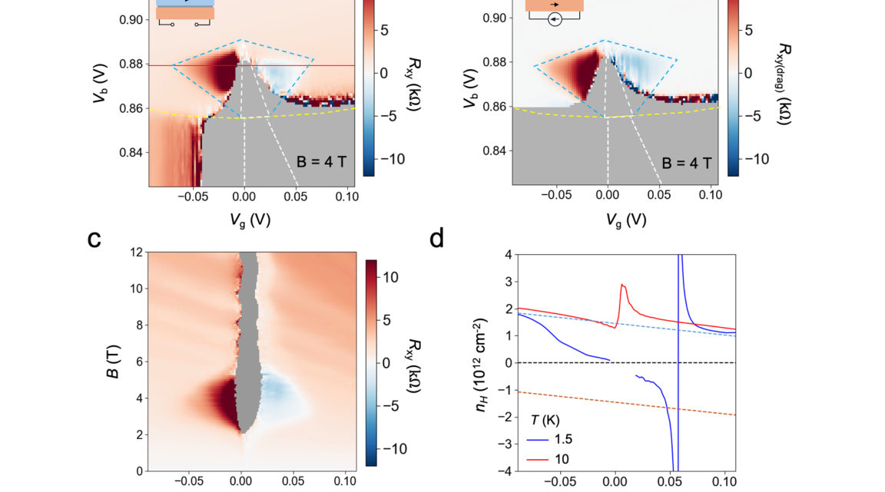
<figcaption class="paper-figure-caption"><b>Fig 3.</b> Figure 3 | Trion Hall effect. a,b, 𝑅() (a) and 𝑅()(+,-&quot;) (b) as a function of 𝑉&quot; and 𝑉! at 𝐵= 4T and 𝑇= 1.5K (device 2). Schematic measurement configurations are shown in the inset. Dashed lines mark the phase boundaries corresponding to those in Fig. 1f. c, Magnetic field dependence of 𝑅() along the red line in a. d, Hall density, 𝑛/, plotted along the red line in a at 𝑇= 1.5K and 10K. The orange and blue dashed lines denote the expected electron and hole densities in the Mo- and W-layers, respectively, based on the calibrated gate capacitances.</figcaption>
</figure>
<figure class="paper-figure-card">
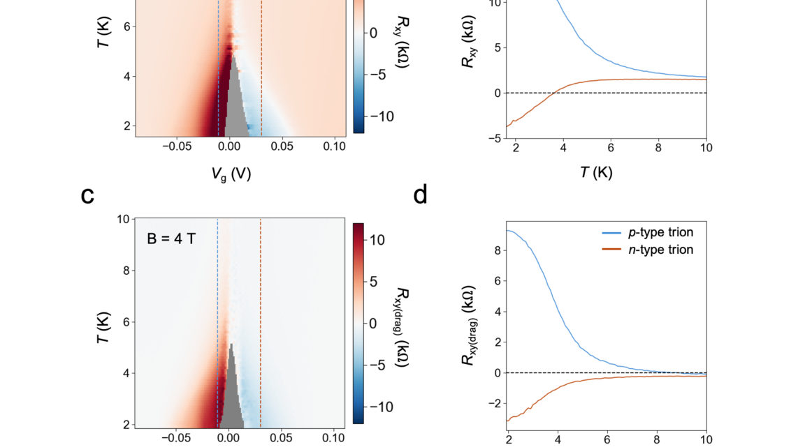
<figcaption class="paper-figure-caption"><b>Fig 4.</b> Figure 4 | Temperature dependence of the trion Hall effect. a,c, 𝑅() (a) and 𝑅()(+,-&quot;) (c) as a function of 𝑉&quot; and 𝑇 at 𝐵= 4T along the red line in Fig. 3a. b,d, Line cuts of a and c on the positive trion (blue line) and negative trion (orange line) side. A sign change in both 𝑅() and 𝑅()(+,-&quot;) around charge neutrality (i.e. 𝑉&quot; ≈0V) is observed for 𝑇≲8K when trions emerge; 𝑅()(+,-&quot;) approaches zero at high temperatures as trions are ionized into free carriers.</figcaption>
</figure>
</div>

<p><strong>Summary.</strong> The study reports the observation of a measurable Hall effect for trions—three-particle bound states—in MoSe2/WSe2 heterobilayers. By measuring transport properties under magnetic fields, the authors confirm that these composite particles carry unique charge responses, including an electron-Hall effect in a hole layer. This opens avenues for studying quantum phenomena associated with multi-body correlated phases.</p>
<p><strong>Why it may be interesting.</strong> This work provides experimental realization of correlated electron physics beyond simple excitons, exploring three-body bound states (trions) and their unique magneto-transport signatures, which is highly relevant to strongly correlated materials research.</p>
<details>
<summary>Detailed structure</summary>
<p><strong>Main problem.</strong> The study aims to observe and characterize the Hall effect for trions (three-particle bound states of electrons and holes) in electron-hole double layers.</p>
<p><strong>Main result.</strong> A distinct Trion Hall effect is observed, including an electron-Hall effect measured within a hole-doped layer due to negative trion drags. This confirms the existence and transport properties of these composite particles.</p>
<p><strong>Method.</strong> The research combines electrical transport measurements (standard Hall bar and Coulomb drag) with optical spectroscopy (reflection contrast) under perpendicular magnetic fields.</p>
<p><strong>Model / system.</strong> The physical system is a Coulomb-coupled electron-hole double layer realized in 2D semiconductor heterostructures, specifically MoSe2/WSe2 heterobilayers. The physics involves the formation and transport of excitons and trions within this coupled quantum well structure.</p>
<p><strong>Key observables.</strong> Hall resistance ($
ho_{xy}$), Coulomb drag resistance ($
ho_{    ext{drag}}$), longitudinal resistance ($R_{xx}$), and optical resonance shifts (RC spectra).</p>
<p><strong>Important parameters / regimes.</strong> Temperature ($T \approx 1.5	ext{K}$ to $10	ext{K}$), Magnetic Field ($B$ up to $12	ext{T}$), Gate Voltages ($V_g$, $V_+$), and carrier densities.</p>
<p><strong>Assumptions / limitations.</strong> The analysis assumes that the observed transport phenomena are dominated by the contributions of free carriers, excitons, and trions, which can be modeled using conductivity tensors.</p>
<p><strong>Figures summary.</strong> Figures detail phase diagrams mapping out regions hosting different charge states (exciton insulator vs. trion fluid) as a function of magnetic field and gate voltage, alongside measurements showing the disappearance of the effect at high T or B.</p>
<p><strong>Paper structure.</strong> The paper systematically presents evidence by first establishing the platform, then measuring transport coefficients ($R_{xx}, R_{xy}$, drag), mapping out phase boundaries in $B$-field/gate-voltage space, and finally confirming the physical mechanism through temperature and density dependence studies.</p>
</details>
<details>
<summary>Abstract</summary>
<p>The realization of Coulomb coupled electron-hole double layers in 2D semiconductor heterostructures has enabled the thermodynamic and transport studies of equilibrium exciton fluids without a magnetic field. By doping the exciton fluid with additional electrons/holes, an equilibrium fluid of trions - three particle bound states of electrons and holes - further emerge, providing the platform to explore new transport phenomena associated with such composite particles. Here we report the observation of a Hall effect for trions in MoSe2/WSe2 heterobilayers, which support Coulomb-coupled electron and hole fluids with tunable densities. The Hall effect arises from a Lorentz force on trions under a perpendicular magnetic field. It is manifested in both Hall drag measurements and standard Hall effect measurements on just one of the semiconductor layers. For negatively charged trions, an electron Hall effect is observed even in a hole doped WSe2 monolayer due to the presence of trion drags. The trion Hall effect also disappears when the trions are ionized at elevated temperatures and/or high trion densities. Our work opens the door for realizing quantum oscillations and the quantum Hall effect for trions.</p>
</details>
<p><sub><a href="#top">↑ back to top</a></sub></p>

<p><a id="paper-2606.18616"></a></p>
<h3 id="hallmark-signatures-of-electronic-pairing-in-two-photon-two-electron-coincidence-angle-resolved-photoemission-spectroscopy"><a href="http://arxiv.org/abs/2606.18616v1">Hallmark Signatures of Electronic Pairing in Two-Photon Two-Electron Coincidence Angle-Resolved Photoemission Spectroscopy</a></h3>
<p><strong>Authors:</strong> Janez Bonca, Alberto Nocera, Andrea Damascelli, Mona Berciu<br>
<strong>Type:</strong> theory · <strong>Category:</strong> strongly correlated electrons · <strong>PDF:</strong> <a href="https://arxiv.org/pdf/2606.18616v1">https://arxiv.org/pdf/2606.18616v1</a><br>
<strong>Analysis basis:</strong> full PDF text, analyzed in chunks
<strong>Topic relevance:</strong> <code>Keldysh / 2PI / non-Gaussian methods</code> <strong>1/5</strong> · <code>analog quantum simulation</code> <strong>1/5</strong></p>
<div class="figure-strip-hint">↔ Scroll figures horizontally</div>
<div class="paper-figures-scroll">
<figure class="paper-figure-card">
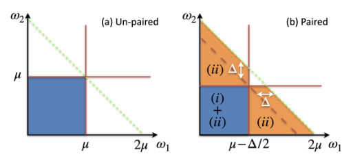
<figcaption class="paper-figure-caption"><b>Fig 1.</b> Figure 1. Shaded regions indicate where 2γ →2e 2eARPES spec- tral weight can appear in the (ω1, ω2) plane of the photoelectrons’ energies, for (a) a quasiparticle liquid and (b) a liquid of pairs with binding energy ∆; µ is the chemical potential. In (b), the orange re- gions labeled ‘(ii)’ are accessible only when both electrons originate from the same pair, while the blue region admits contributions from electrons ejected from different pairs, labeled ‘(i)’. The significance of the solid and dashed lines is explained in the text.</figcaption>
</figure>
<figure class="paper-figure-card">
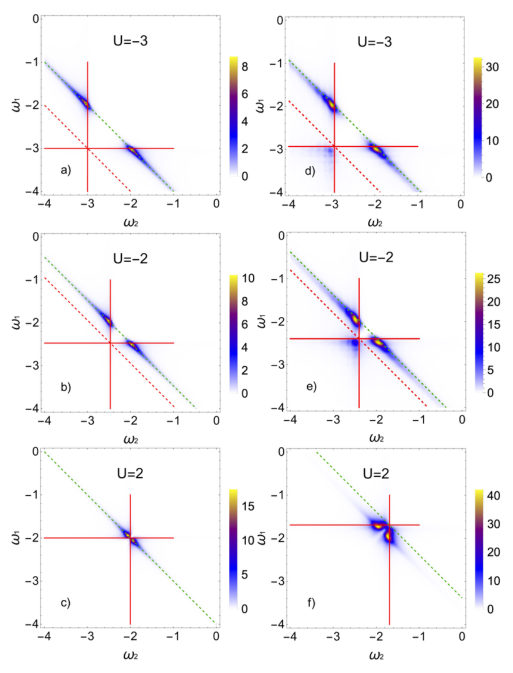
<figcaption class="paper-figure-caption"><b>Fig 2.</b> Figure 2. Momentum-integrated 2eARPES weight D(ω1, ω2) for the pure Hubbard model (λ = 0). Left column: VED results for Ne = 2, N = 90. Right column: DMRG results for Ne = 12, N = 48 (n = 0.25). In all panels tel = 1, U = −3, −2, +2 (top to bottom), and η = 0.05. Lines as in Fig. 1.</figcaption>
</figure>
<figure class="paper-figure-card">
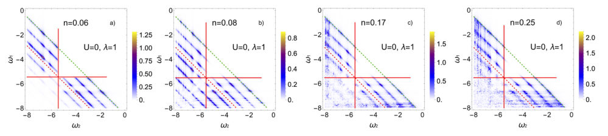
<figcaption class="paper-figure-caption"><b>Fig 3.</b> Figure 3. Momentum-integrated 2eARPES weight D(ω1, ω2) for the pure Holstein model (U = 0, λ = 1.0, Ω= 1.0, tph = 0). (a) VED results for Ne = 2, N = 34 (n →0). (b)–(d) DMRG results for N = 48 and Ne = 4, 8, 12, respectively. Lines as in Fig. 1, with µ and ∆ extracted from DMRG.</figcaption>
</figure>
<figure class="paper-figure-card">
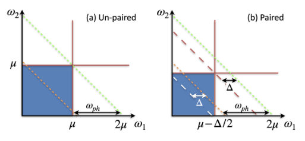
<figcaption class="paper-figure-caption"><b>Fig 4.</b> Figure 4. Counterparts to Fig. 1 for the γ →2e setup. (a) Unpaired case: the dotted orange line marks the global energy maximum for γ →2e processes. (b) Paired case: the dotted orange (dashed white) line marks the global maximum for type-(ii) [type-(i)] γ →2e pro- cesses. Blue shaded regions show where conventional γ →e ARPES weight is expected; unlike for the 2γ →2e setup, here the 2eARPES signal is not energetically separated from this background.</figcaption>
</figure>
</div>

<p><strong>Summary.</strong> The paper introduces two-photon two-electron coincidence ARPES ($2\gamma 	o 2e$ $2e$ARPES) as a superior technique for studying electronic pairing in correlated materials. Theoretically, it shows that this method yields an unambiguous energy separation between photoemission signals originating from electrons within the same pair versus those from different pairs. This allows for model-independent identification of superconducting signatures directly from the coincidence spectrum.</p>
<p><strong>Why it may be interesting.</strong> This work provides a powerful spectroscopic diagnostic tool applicable to strongly correlated materials, offering a way to probe pairing mechanisms directly without relying on complex material-specific assumptions or complementary measurements.</p>
<details>
<summary>Detailed structure</summary>
<p><strong>Main problem.</strong> To develop a method that provides a direct and unambiguous probe of electronic pairing in strongly correlated quantum materials, overcoming limitations of standard ARPES.</p>
<p><strong>Main result.</strong> Two-photon two-electron coincidence ARPES ($2\gamma 	o 2e$ $2e$ARPES) offers a model-independent separation in the photoemission energy plane between signals from electrons originating from the same pair and those from different pairs, allowing direct measurement of pairing signatures.</p>
<p><strong>Method.</strong> Theoretical derivation of coincident photoelectron intensity formulas and comparison of spectral weight regions in the $(\omega_1, \omega_2)$ energy plane for paired versus unpaired ground states.</p>
<p><strong>Model / system.</strong> The study applies general theoretical grounds to strongly correlated electron systems, modeled using frameworks like the Hubbard model or Hubbard-Holstein model. The analysis focuses on distinguishing between paired and unpaired electronic ground states.</p>
<p><strong>Key observables.</strong> Coincidence photoelectron intensity $D(\omega_1, \omega_2)$ in the $(\omega_1, \omega_2)$ energy plane; specific energy bounds related to pair binding energy ($\Delta$) and boson energy ($\Omega$).</p>
<p><strong>Important parameters / regimes.</strong> Pairing gap ($\Delta$), pair binding energy, chemical potential ($\mu$), and the photon/boson energies ($\omega_{ph}, \Omega$).</p>
<p><strong>Assumptions / limitations.</strong> The analysis relies on the sudden approximation when photoelectrons depart; results are derived at zero temperature but expected to apply to preformed pair liquids.</p>
<p><strong>Figures summary.</strong> Figures illustrate the spectral weight regions in the $(\omega_1, \omega_2)$ plane for both quasiparticle liquid and paired states, showing distinct boundaries separating type-(i) (different pairs) and type-(ii) (same pair) emission signals.</p>
<p><strong>Paper structure.</strong> The paper establishes general theoretical grounds by deriving intensity formulas, analyzes the spectral separation in the $(\omega_1, \omega_2)$ plane for both paired and unpaired systems using numerical simulations of correlated models, and contrasts this method with one-photon setups.</p>
</details>
<details>
<summary>Abstract</summary>
<p>Understanding strongly correlated quantum materials remains a central challenge in condensed matter physics and materials science. While angle-resolved photoemission spectroscopy (ARPES) has become an indispensable probe of single-quasiparticle excitations, it accesses electronic correlations only indirectly. Here we show that unlike one-photon in, two-electrons out coincidence ARPES ($γ\!\rightarrow\!2e$ 2eARPES), the two-photon in, two-electron out $2γ\!\rightarrow\!2e$ 2eARPES provides a direct and unambiguous probe of electronic pairing. We establish this on general theoretical grounds and substantiate it through large-scale numerical simulations of strongly correlated models with both paired and unpaired ground states. The key result is a model-independent separation in the $(ω_1,ω_2)$ plane of the two photoelectrons' energies, between signal from electrons emitted from the \emph{same} pair and signal from electrons emitted from \emph{different} pairs; this follows from energy conservation alone and is independent of any material-specific assumptions. Our findings demonstrate that $2γ\!\rightarrow\!2e$ 2eARPES can identify pairing and extract the pair binding energy as well as the energy of the 'glue' boson without any sophisticated data analysis or complementary measurements.</p>
</details>
<p><sub><a href="#top">↑ back to top</a></sub></p>

<p><a id="paper-2606.18470"></a></p>
<h3 id="exact-propagating-dirac-wave-packets-in-an-attractive-coulomb-like-potential"><a href="http://arxiv.org/abs/2606.18470v1">Exact propagating Dirac wave packets in an attractive Coulomb-like potential</a></h3>
<p><strong>Authors:</strong> Siddhant Das<br>
<strong>Type:</strong> theory · <strong>Category:</strong> other · <strong>PDF:</strong> <a href="https://arxiv.org/pdf/2606.18470v1">https://arxiv.org/pdf/2606.18470v1</a><br>
<strong>Analysis basis:</strong> full PDF text, analyzed in chunks
<strong>Topic relevance:</strong> <code>non-equilibrium dynamics</code> <strong>1/5</strong></p>
<div class="figure-strip-hint">↔ Scroll figures horizontally</div>
<div class="paper-figures-scroll">
<figure class="paper-figure-card">
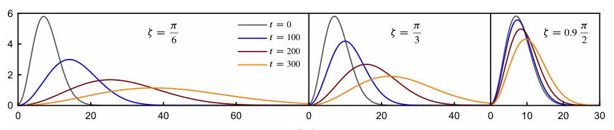
<figcaption class="paper-figure-caption"><b>Fig 1.</b> FIG. 1. Time evolution of the marginal density (16) for the elementary-function wave packet with 𝑤0 = 50. The propagation slows as the confinement 𝜁strengthens, freezing completely as 𝜁→𝜋/2.</figcaption>
</figure>
<figure class="paper-figure-card">
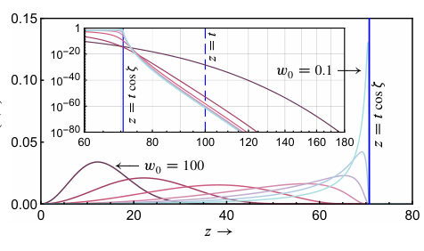
<figcaption class="paper-figure-caption"><b>Fig 2.</b> FIG. 2. Marginal density (16) at 𝑡= 100 and 𝜁= 𝜋/4, for 𝑤0 from 100 (darkest) to 0.1 (lightest). As 𝑤0 falls below the Compton scale (≃1), the leading edge sharpens against the effective light cone 𝑧= 𝑡cos 𝜁 (solid blue). Inset: log-log view of the tails reaching beyond both 𝑧= 𝑡cos 𝜁and the true light cone 𝑧= 𝑡(dashed blue).</figcaption>
</figure>
</div>

<p><strong>Summary.</strong> This paper presents the construction of exact, propagating wave-packet solutions for the Dirac equation in an attractive Coulomb-like potential. The key findings include demonstrating that the probability density decouples from spin and that the wave packet's time evolution freezes at a critical coupling strength. This provides significant analytical insight into relativistic quantum dynamics in structured potentials.</p>
<p><strong>Why it may be interesting.</strong> This work provides exact analytical solutions for wave propagation in a confining potential within a relativistic framework, which is highly relevant to understanding particle confinement in structured media or quantum waveguides beyond simple approximations.</p>
<details>
<summary>Detailed structure</summary>
<p><strong>Main problem.</strong> The primary goal is constructing exact, positive-energy, normalizable wave-packet solutions for the Dirac equation subjected to an attractive Coulomb-like potential ($V = -v_0/
ho$).</p>
<p><strong>Main result.</strong> The authors constructed novel families of exact solutions exhibiting two key features: spin-density decoupling and temporal freezing at a critical coupling. These solutions correctly reduce to known nonrelativistic forms like the Hermite–Gauss wave packet.</p>
<p><strong>Method.</strong> Methods involve solving coupled partial differential equations derived from the Dirac Hamiltonian, utilizing superposition techniques, and mapping solutions from the 2D Helmholtz equation (H-&gt;D map).</p>
<p><strong>Model / system.</strong> The model is the relativistic Dirac equation solved in cylindrical coordinates with a central potential $V = -v_0/
ho$. The analysis focuses on propagating wave packets characterized by their longitudinal marginal density.</p>
<p><strong>Key observables.</strong> Longitudinal marginal density $P(z, t)$, spin-density decoupling ($\Psi^\dagger\Psi$ independent of spin), and the group velocity's slowing down as confinement increases.</p>
<p><strong>Important parameters / regimes.</strong> The coupling constant $v_0$, which has a critical value leading to temporal freezing; the nonrelativistic limit ($c 	o \infty$).</p>
<p><strong>Assumptions / limitations.</strong> The analysis initially sets $\hbar=m=c=1$ and focuses on positive-energy eigenstates. The derivation relies on symmetry considerations for axisymmetric Hamiltonians.</p>
<p><strong>Figures summary.</strong> Figure 1 illustrates the time evolution of the marginal density showing dispersive spreading that slows down as confinement increases, leading to temporal freezing. Figure 2 shows this effect for varying coupling parameters.</p>
<p><strong>Paper structure.</strong> The paper systematically derives solutions by first establishing the governing PDEs, providing explicit examples using elementary functions, and later developing a general mapping scheme (H-&gt;D) from known solvable equations like the Helmholtz equation.</p>
</details>
<details>
<summary>Abstract</summary>
<p>We construct exact, positive-energy, normalizable wave-packet solutions of the Dirac equation in the axisymmetric potential $V=-\,v_0/ρ$ -- to our knowledge, the first such solutions in any external potential. Remarkably, one family comprises only elementary functions whose longitudinal profiles reproduce the free-Schrödinger Hermite--Gauss wave packets in the nonrelativistic limit. All packets share two striking features: (i) a probability density that is pointwise decoupled from spin orientation -- despite the inherent spin-orbit coupling of the Dirac equation -- and (ii) a complete freezing of their time evolution at the critical coupling $v_0\to\hbar c/2$. We also present a simple scheme that maps solutions of the 2D Helmholtz equation to further exact Dirac wave packets.</p>
</details>
<p><sub><a href="#top">↑ back to top</a></sub></p>

<p><a id="paper-2606.18428"></a></p>
<h3 id="quantum-algorithm-for-valiant-vazirani-reduction"><a href="http://arxiv.org/abs/2606.18428v1">Quantum algorithm for Valiant-Vazirani reduction</a></h3>
<p><strong>Authors:</strong> Patrick Kelly, Victoria S. Ordonez, Michael R. Geller<br>
<strong>Type:</strong> theory · <strong>Category:</strong> quantum information and computing · <strong>PDF:</strong> <a href="https://arxiv.org/pdf/2606.18428v1">https://arxiv.org/pdf/2606.18428v1</a><br>
<strong>Analysis basis:</strong> full PDF text, analyzed in chunks
<strong>Topic relevance:</strong> <code>driven-dissipative phase transition</code> <strong>1/5</strong></p>
<div class="figure-strip-hint">↔ Scroll figures horizontally</div>
<div class="paper-figures-scroll">
<figure class="paper-figure-card">
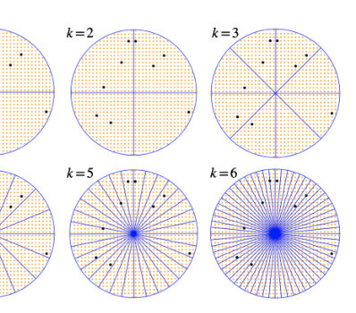
<figcaption class="paper-figure-caption"><b>Fig 1.</b> Figure 1: Valiant-Vazirani filter. (a) Illustration of the set {0, 1}n containing all n-bit strings x, shown as points. Points marked black (chosen randomly) indicate s satisfying assignments with f(x) = 1. In this example, n = 10 and s = 9. (b) Random partition into 2k subsets for different values of k. For each k, the individual sectors can be indexed by a number a ∈{0, 1}k (not shown in the illustration). When s ≈2k there is, on average, 1 satisfying assignment per circular sector. In the example shown, this occurs when k = 3.</figcaption>
</figure>
<figure class="paper-figure-card">
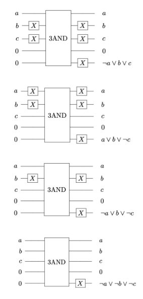
<figcaption class="paper-figure-caption"><b>Fig 2.</b> Figure 3: Circuits to implement the 8 clause signatures. Here a, b, c ∈{0, 1} and X is a σx gate. The 3AND gate is defined in Figure 4.</figcaption>
</figure>
<figure class="paper-figure-card">
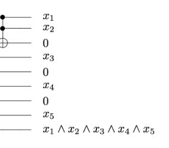
<figcaption class="paper-figure-caption"><b>Fig 3.</b> Figure 5: Circuit to implement M-bit conjunction using CCNOTs. Here xi ∈{0, 1}. This requires O(M) CCNOT gates and O(M) additional ancilla initialized to |0⟩. The case M = 5 is shown.</figcaption>
</figure>
</div>

<p><strong>Summary.</strong> The paper develops a quantum algorithm implementing the Valiant-Vazirani reduction by transforming SAT into UNIQUE SAT. This is achieved by constructing a complex oracle circuit based on random hashing constraints and leveraging 'torsion nonlinearity' found in systems like Bose-Einstein condensates. The result suggests that fault-tolerant implementation could solve NP problems, though this speedup requires nonlinear quantum hardware.</p>
<p><strong>Why it may be interesting.</strong> This work directly bridges abstract complexity theory (NP-completeness) with concrete proposals for nonlinear quantum computation, offering a pathway to solving hard problems using physical models like BECs that exhibit such nonlinearities.</p>
<details>
<summary>Detailed structure</summary>
<p><strong>Main problem.</strong> To construct a quantum algorithm for the Valiant-Vazirani reduction, which reduces the NP-complete SAT problem to UNIQUE SAT.</p>
<p><strong>Main result.</strong> The authors provide a randomized polynomial-time reduction from SAT to UNIQUE SAT using a filtered oracle. This implies that fault-tolerant implementation could solve NP problems in polynomial time via nonlinear quantum coprocessors.</p>
<p><strong>Method.</strong> The core method involves constructing a filtered Boolean function $\phi(x)$ by combining the original 3SAT formula with indicator functions derived from random hash constraints, which are then implemented using reversible oracle circuits.</p>
<p><strong>Model / system.</strong> The theoretical framework relies on extending gate-based quantum computation to include auxiliary degrees of freedom governed by a nonlinear Schrödinger equation. The specific nonlinearity utilized is 'torsion nonlinearity,' arising in models like two-component Bose-Einstein condensates or spin systems with all-to-all Ising interaction.</p>
<p><strong>Key observables.</strong> The probability $p = 	ext{Pr}(X=1)$ of finding the unique satisfying assignment, and the expected number of solutions $\lambda$.</p>
<p><strong>Important parameters / regimes.</strong> The analysis requires choosing an optimal hash dimension $k$ such that $1/16 < \lambda \le 1/8$, and the speedup is contingent on operating in the noise-free limit.</p>
<p><strong>Assumptions / limitations.</strong> The primary assumptions are the existence of a fault-tolerant nonlinear quantum coprocessor simulating torsion, and the analysis holds strictly in the idealized noise-free limit.</p>
<p><strong>Figures summary.</strong> Figures illustrate the Valiant-Vazirani filter concept using random partitioning, circuits for encoding hash constraints (8 clause signatures), and general circuit structures for implementing 3AND gates and conjunctions using CCNOTs.</p>
<p><strong>Paper structure.</strong> The paper first establishes the theoretical reduction from SAT to UNIQUE SAT. It then details the construction of the filtered oracle by rewriting the indicator function into a system of linear equations over $\mathbb{F}_2$, which is finally implemented via complex quantum circuits involving ancilla qubits and CCNOT gates.</p>
</details>
<details>
<summary>Abstract</summary>
<p>There is growing interest in extensions of the standard model of gate-based quantum computation to include auxiliary degrees of freedom evolving according to a nonlinear Schrödinger equation. By reducing the Boolean satisfiability problem SAT to quantum state discrimination, Abrams and Lloyd argued that the right type of nonlinearity can be used to solve {\sf NP} and #{\sf P} problems in polynomial time, at least in an idealized noise-free limit. For practical implementation, however, we are restricted to simulated and emergent nonlinearities, such as that appearing in mean field models for ultracold atoms and similar ensembles. A prominent example is the torsion model, which arises in two-component Bose-Einstein condensates and spin models with all-to-all Ising interaction. But torsion-based state discrimination appears to fall short of solving SAT. Here we close this gap by constructing the filtered oracle of the Valiant-Vazirani theorem, providing a randomized polynomial-time reduction from SAT to UNIQUE SAT, a promise problem where there is at most 1 satisfying assignment. In the noise free limit, the UNIQUE SAT problem can be olved in polynomial time using torsion nonlinearity. Quantum Valiant-Vazirani reduction is no faster than the efficient classical version, but a fault-tolerant implementation coupled to a nonlinear quantum coprocessor simulating torsion would enable polynomial time solution to {\sf NP} (but not #{\sf P}) problems.</p>
</details>
<p><sub><a href="#top">↑ back to top</a></sub></p>

<p><a id="paper-2606.19020"></a></p>
<h3 id="quantum-circuit-decomposition-of-the-tangent-fermion-dirac-operator"><a href="http://arxiv.org/abs/2606.19020v1">Quantum circuit decomposition of the tangent-fermion Dirac operator</a></h3>
<p><strong>Authors:</strong> C. W. J. Beenakker<br>
<strong>Type:</strong> theory · <strong>Category:</strong> quantum information and computing · <strong>PDF:</strong> <a href="https://arxiv.org/pdf/2606.19020v1">https://arxiv.org/pdf/2606.19020v1</a><br>
<strong>Analysis basis:</strong> full PDF text, analyzed in chunks
<strong>Topic relevance:</strong> <code>analog quantum simulation</code> <strong>1/5</strong></p>
<div class="figure-strip-hint">↔ Scroll figures horizontally</div>
<div class="paper-figures-scroll">
<figure class="paper-figure-card">
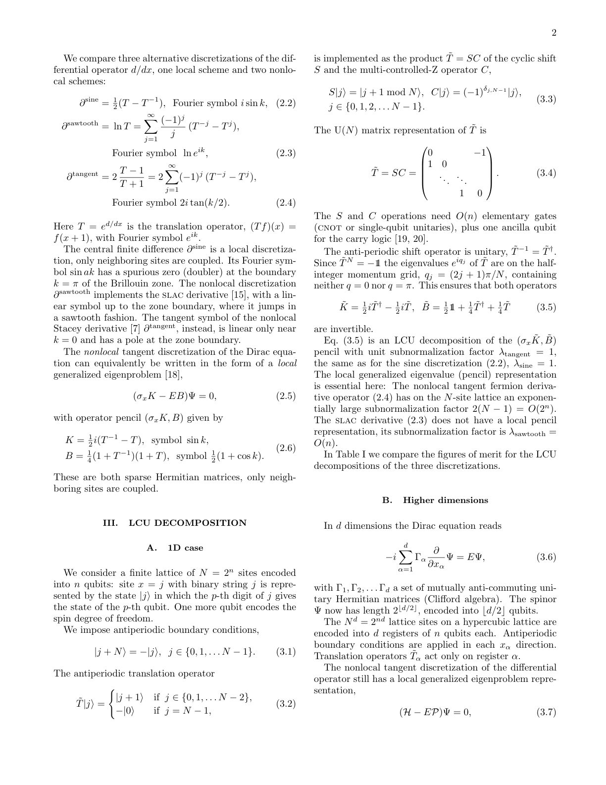
<figcaption class="paper-figure-caption"><b>Fig 1.</b> Low-resolution page preview, page 2</figcaption>
</figure>
<figure class="paper-figure-card">
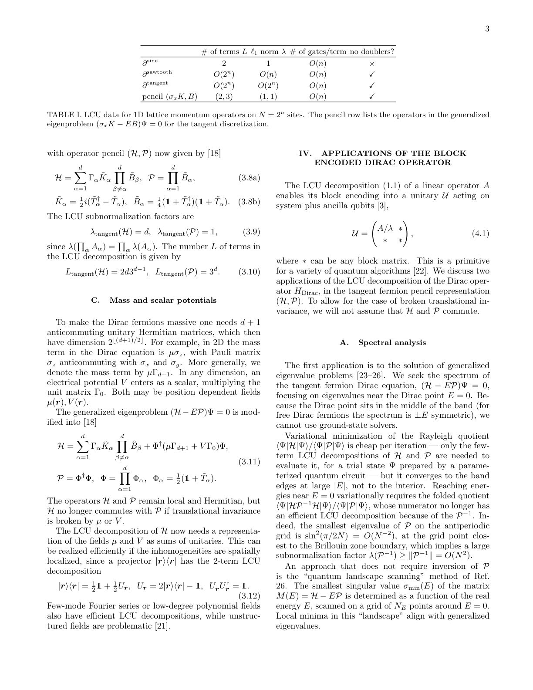
<figcaption class="paper-figure-caption"><b>Fig 2.</b> Low-resolution page preview, page 3</figcaption>
</figure>
<figure class="paper-figure-card">
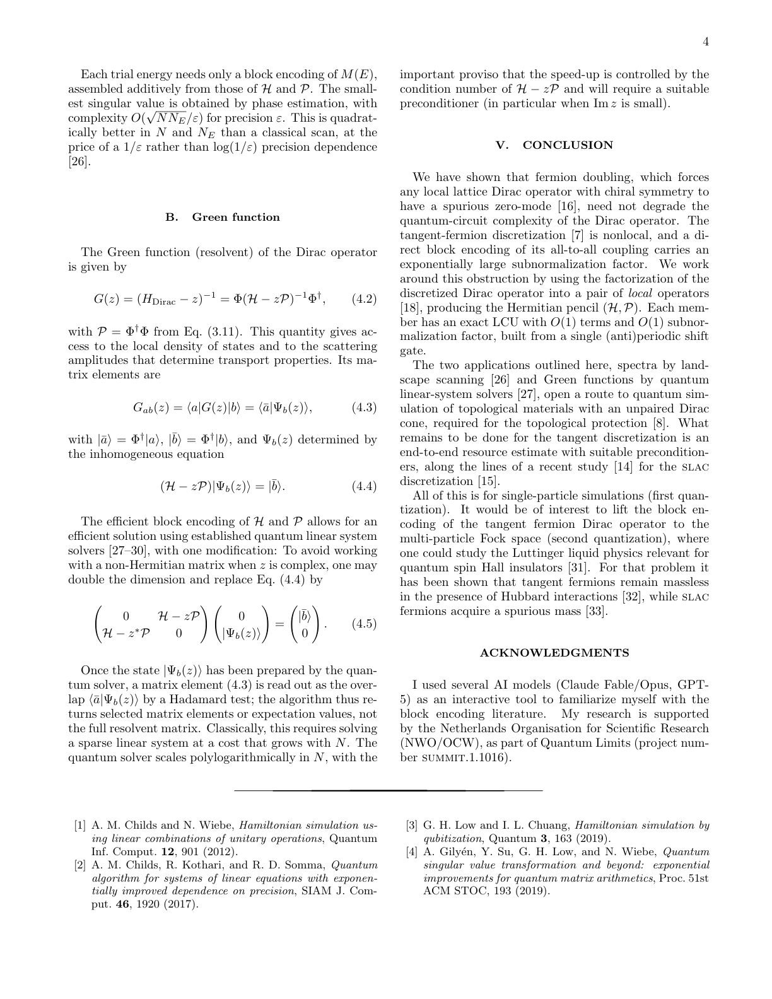
<figcaption class="paper-figure-caption"><b>Fig 3.</b> Low-resolution page preview, page 4</figcaption>
</figure>
<figure class="paper-figure-card">
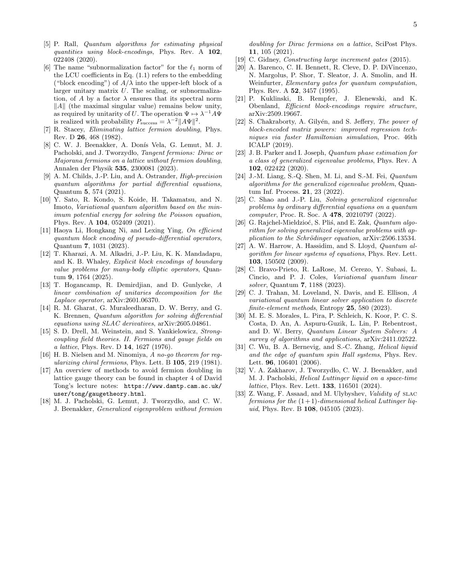
<figcaption class="paper-figure-caption"><b>Fig 4.</b> Low-resolution page preview, page 5</figcaption>
</figure>
</div>

<p><strong>Summary.</strong> The paper tackles the challenge of implementing lattice Dirac operators on quantum computers, where standard methods suffer from exponentially growing circuit complexity. By reformulating the problem using the tangent-fermion discretization within a generalized eigenvalue framework, the authors achieve an encoding whose resource requirements scale favorably (polylogarithmically or $O(1)$) with system size.</p>
<p><strong>Why it may be interesting.</strong> This work directly addresses the resource scaling of simulating fundamental condensed matter Hamiltonians (like Dirac fermions) on near-term quantum hardware by providing a method to encode them efficiently in terms of unitaries.</p>
<details>
<summary>Detailed structure</summary>
<p><strong>Main problem.</strong> Developing an efficient quantum circuit representation for the Dirac operator on a lattice that avoids fermion doubling while maintaining polynomial scaling with system size.</p>
<p><strong>Main result.</strong> The tangent-fermion discretization, when formulated as a generalized eigenvalue problem $(	ext{H} - E	ext{P})\Psi = 0$, yields operators whose quantum circuits have term counts and subnormalization factors independent of lattice size, matching the efficiency of elliptic operators.</p>
<p><strong>Method.</strong> Analyzing the Linear Combination of Unitaries (LCU) decomposition for discretized Dirac operators and reformulating the problem into a local generalized eigenvalue structure to achieve efficient encoding.</p>
<p><strong>Model / system.</strong> The 1D/higher-dimensional Dirac equation discretized on a lattice, comparing standard discretizations ($\partial_{\sin}$) against the tangent-fermion scheme. The core mathematical tool is casting the problem as $(	ext{H} - E	ext{P})\Psi = 0$.</p>
<p><strong>Key observables.</strong> Eigenvalues near $E=0$, smallest singular value $\sigma_{\min}(E)$, and the efficiency metrics ($L$ and $\lambda$) of the quantum circuit encoding.</p>
<p><strong>Important parameters / regimes.</strong> Lattice size ($N$), energy ($E$), and the structure of the operators $  ext{H}$ and $   ext{P}$.</p>
<p><strong>Assumptions / limitations.</strong> The analysis relies on recasting the problem into a generalized eigenvalue form $(	ext{H} - E	ext{P})\Psi = 0$ to bypass the efficiency bottlenecks found in direct LCU decompositions of non-local operators.</p>
<p><strong>Figures summary.</strong> Table I compares the figures of merit ($L$, $\lambda$) for different discretizations, showing that only the pencil representation for $\partial_{	ext{tangent}}$ achieves $O(1)$ scaling for both metrics.</p>
<p><strong>Paper structure.</strong> The paper first establishes the efficiency limitations of standard Dirac operator discretizations in quantum circuits. It then introduces and analyzes the tangent-fermion discretization by recasting it into a local generalized eigenvalue problem $(	ext{H} - E	ext{P})\Psi = 0$. Finally, it discusses methods for solving this system, such as quantum landscape scanning.</p>
</details>
<details>
<summary>Abstract</summary>
<p>The Dirac operator on a lattice cannot be both local and free of fermion doubling, at least not without breaking fundamental symmetries. Non-local, symmetry-preserving discretizations that avoid doubling have a quantum circuit representation as a linear-combination-of-unitaries (LCU) in which both the number of terms and their norm (the subnormalization factor) grow with the lattice size, compromising the efficiency of a quantum algorithm. We show that the tangent-fermion discretization escapes this obstruction when the Dirac equation is written as a generalized eigenvalue problem with a local operator pencil: Each member of the pencil has an exact LCU, with term count that is independent of lattice size and with subnormalization factor of order unity, on a par with elliptic operators. This provides an efficient block-encoding primitive for Dirac spectra and Green functions without fermion doubling.</p>
</details>
<p><sub><a href="#top">↑ back to top</a></sub></p>

<p><a id="paper-2606.19239"></a></p>
<h3 id="quantum-classical-auxiliary-field-quantum-monte-carlo-at-the-edge-of-practicability"><a href="http://arxiv.org/abs/2606.19239v1">Quantum-Classical Auxiliary-Field Quantum Monte Carlo at the Edge of Practicability</a></h3>
<p><strong>Authors:</strong> Francesco Nappi, Matthew Kiser, Fedor Šimkovic<br>
<strong>Type:</strong> theory · <strong>Category:</strong> numerical methods · <strong>PDF:</strong> <a href="https://arxiv.org/pdf/2606.19239v1">https://arxiv.org/pdf/2606.19239v1</a><br>
<strong>Analysis basis:</strong> full PDF text, analyzed in chunks
<strong>Topic relevance:</strong> <code>methods for driven-dissipative</code> <strong>1/5</strong></p>
<div class="figure-strip-hint">↔ Scroll figures horizontally</div>
<div class="paper-figures-scroll">
<figure class="paper-figure-card">
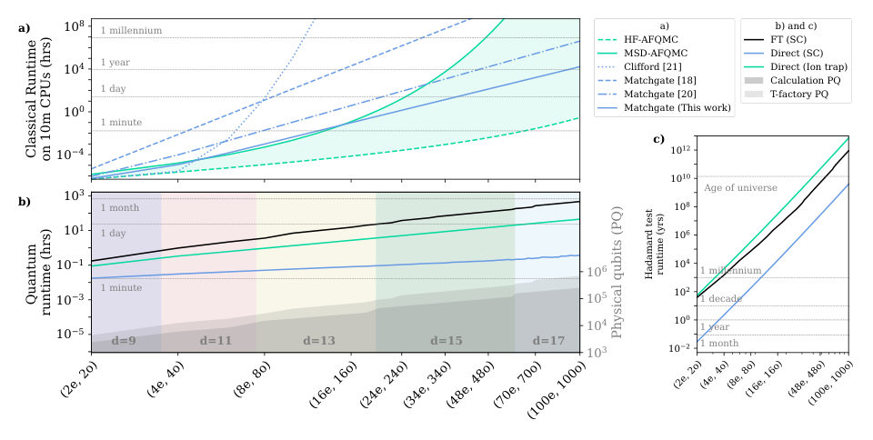
<figcaption class="paper-figure-caption"><b>Fig 1.</b> FIG. 1. Estimated classical and quantum resource requirements of QC-AFQMC. Further details on assumptions and timings used to construct this figure can be found in Sections II B and IV D. a) Estimated total classical runtime of classical ph-AFQMC (green) and hybrid QC-AFQMC (blue) implementations as a function of the chemical system size described by (Nelec, Norb). b) Quantum runtime and physical qubit (PQ) count estimates for collecting matchgate shadow data using a FT quantum computer based on surface code error correction, as well as from direct NISQ implementations using superconducting (SC) and ion-trap quantum hardware. c) QC-AFQMC runtimes for NISQ and FT implementations using the...</figcaption>
</figure>
<figure class="paper-figure-card">
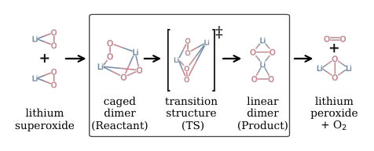
<figcaption class="paper-figure-caption"><b>Fig 2.</b> FIG. 2. Reaction pathway of lithium superoxide to lithium peroxide and molecular oxygen [36].</figcaption>
</figure>
<figure class="paper-figure-card">
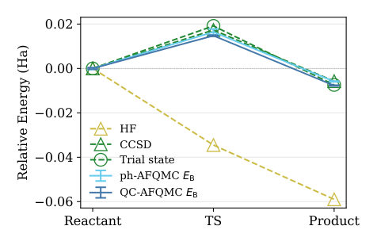
<figcaption class="paper-figure-caption"><b>Fig 3.</b> FIG. 4. Reaction energies for three configurations of the rearrangement pathway of Li2O4 lithium superoxide dimer (shown in Fig. 2), where lithium peroxide and oxygen (prod- uct) are formed from a lithium superoxide dimer (reactant) through a transition state (TS). Calculations are performed in the cc-pVDZ basis set using an active space of 26 electrons in 20 orbitals. We compare the results for Hartree-Fock, CCSD, the trial state (top 3 determinants of CCSD) and block en- ergies EB during QC-AFQMC and ph-AFQMC calculations. Absolute energies are given in Table II.</figcaption>
</figure>
<figure class="paper-figure-card">
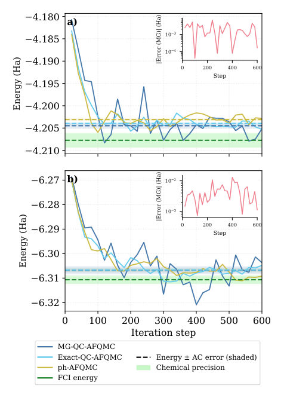
<figcaption class="paper-figure-caption"><b>Fig 4.</b> FIG. 3. QC-AFQMC evolution for a) H8 and b) H12 hydro- gen chains with R = 1.5˚A using experimental and simulated data, respectively. We show convergence curves where ener- gies are computed using either matchgate shadow data (MG- QC-AFQMC) or via a state-vector representation of the trial state (Exact-QC-AFQMC). Fully classical ph-AFQMC curves and exact FCI energies are shown for comparison. Insets show the error of the energy estimation of MG-QC-AFQMC with respect to the exact energy calculation of Exact-QC-AFQMC.</figcaption>
</figure>
<figure class="paper-figure-card">
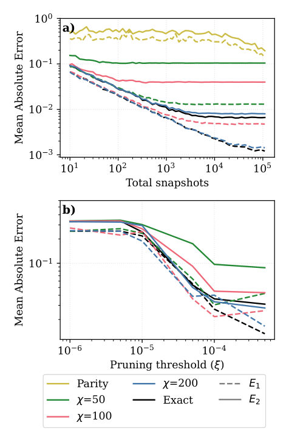
<figcaption class="paper-figure-caption"><b>Fig 5.</b> FIG. 6. Performance analysis of the filter state method using MPS states for the H8 hydrogen-chain system. a) Overlap, one-body energy and two-body energy errors for a fixed filter threshold ξ and variable bond dimensions χ of the classical simulation of the circuit are used as a filter. SV corresponds to a full state vector filter representation. b) The number of snapshots is fixed to 2,000, while χ and ξ are varied.</figcaption>
</figure>
</div>

<p><strong>Summary.</strong> The paper introduces significant algorithmic enhancements to Quantum-Classical Auxiliary-Field Quantum Monte Carlo (QC-AFQMC) methods. By improving how singular Pfaffians are calculated and utilizing advanced differentiation techniques, the method's scaling is dramatically improved from $\mathcal{O}(N^{5.5})$ to $\mathcal{O}(N^{4.5})$. This advancement brings QC-AFQMC closer to treating chemically relevant systems by demonstrating feasibility for larger molecular models.</p>
<p><strong>Why it may be interesting.</strong> This work directly addresses the computational bottleneck in simulating strongly correlated electronic structure problems, providing a concrete pathway toward achieving quantum advantage in chemistry by optimizing classical post-processing steps.</p>
<details>
<summary>Detailed structure</summary>
<p><strong>Main problem.</strong> The primary challenge is improving the computational scaling of Quantum-Classical Auxiliary-Field Quantum Monte Carlo (QC-AFQMC) for calculating ground state energies in fermionic systems.</p>
<p><strong>Main result.</strong> The authors achieved a significant algorithmic improvement, reducing the dominant per-step classical scaling from $    ilde{\mathcal{O}}(N^{5.5})$ to $    ilde{\mathcal{O}}(N^{4.5})$, leading to substantial estimated runtime reductions for chemically relevant systems.</p>
<p><strong>Method.</strong> The core method is QC-AFQMC, which combines quantum state preparation (using matchgate shadows) with classical Monte Carlo sampling. Key algorithmic improvements include applying Aitken's block transformation to handle singular Pfaffians and using algorithmic differentiation for the force bias calculation.</p>
<p><strong>Model / system.</strong> The work applies to calculating ground-state energies of molecular systems, demonstrated on $   ext{H}<em 12>8$ and hydrogen chains up to $   ext{H}</em>_4$ lithium superoxide dimer rearrangement pathway. The underlying physics is described by a second-quantized Hamiltonian.}$, as well as the $  ext{Li}_2   ext{O</p>
<p><strong>Key observables.</strong> Ground-state energy; computational runtimes (classical and quantum); scaling exponents ($N$, number of molecular spin-orbitals).</p>
<p><strong>Important parameters / regimes.</strong> System size (up to 100 orbitals demonstrated in estimates); error mitigation threshold ($\xi$ or $\eta$); required qubit counts for fault tolerance.</p>
<p><strong>Assumptions / limitations.</strong> The method relies on algorithmic improvements like Aitken's transformation and the use of matchgate shadow tomography, which are approximations necessary due to current quantum hardware limitations.</p>
<p><strong>Figures summary.</strong> Figures illustrate resource requirements vs. system size, reaction pathway diagrams for $  ext{Li}_2   ext{O}_4$, and energy evolution curves comparing QC-AFQMC against other methods like ph-AFQMC.</p>
<p><strong>Paper structure.</strong> The paper details the theoretical framework of QC-AFQMC, presents algorithmic improvements (Aitken's transformation, differentiation), validates these improvements through scaling analysis, and applies the method to benchmark molecular systems ($ ext{H}_8$, $    ext{Li}_2   ext{O}_4$).</p>
</details>
<details>
<summary>Abstract</summary>
<p>We introduce algorithmic improvements to quantum-classical auxiliary-field quantum Monte Carlo (QC-AFQMC) that reduce the dominant per-step classical scaling from $\tilde{\mathcal{O}}(N^{5.5})$ to $\tilde{\mathcal{O}}(N^{4.5})$ as a function of the number of molecular spin-orbitals $N$. Central to this improvement is the application of Aitken's block transformation to handle singular Pfaffians arising in the estimation of overlaps between a quantum trial state and classical Slater-determinant walkers. Together with the use of algorithmic differentiation for the computation of the force bias, this yields a $248\times$ estimated runtime improvement for a system of 100 molecular orbitals. Using our workflow, we demonstrate a ground-state energy calculation for $H_8$ from quantum data collected on IQM Emerald and post-processed with a tensor-network-based error-mitigation technique. We further validate the method's scalability through noiseless simulation of hydrogen chains up to $H_{12}$, and on the lithium-air battery related rearrangement pathway of the $Li_2O_4$ lithium superoxide dimer in a (26e, 20o) active space. We estimate both quantum and classical runtimes for a potential fault-tolerant implementation of QC-AFQMC, showing that the method holds promise for the early fault-tolerant era. These results move QC-AFQMC a step closer to treating chemically relevant systems.</p>
</details>
<p><sub><a href="#top">↑ back to top</a></sub></p>

<p><a id="paper-2606.18494"></a></p>
<h3 id="towards-an-optimally-distributed-quantum-fourier-transform-circuit"><a href="http://arxiv.org/abs/2606.18494v1">Towards an Optimally Distributed Quantum Fourier Transform Circuit</a></h3>
<p><strong>Authors:</strong> Zachary Vernec, Michael Silver, Hans-Arno Jacobsen<br>
<strong>Type:</strong> both · <strong>Category:</strong> quantum information and computing · <strong>PDF:</strong> <a href="https://arxiv.org/pdf/2606.18494v1">https://arxiv.org/pdf/2606.18494v1</a><br>
<strong>Analysis basis:</strong> full PDF text, analyzed in chunks
<strong>Topic relevance:</strong> <code>entanglement &amp; information structure</code> <strong>1/5</strong></p>
<div class="figure-strip-hint">↔ Scroll figures horizontally</div>
<div class="paper-figures-scroll">
<figure class="paper-figure-card">
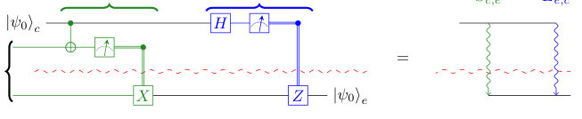
<figcaption class="paper-figure-caption"><b>Fig 1.</b> Figure 1. A state teleportation protocol (teledata) using starting and ending processes. The LHS uses a common circuit notation such as would be used in [26], while the RHS has the same circuit in the notation of Wu et al. [27] with snake arrows representing the flow of information.</figcaption>
</figure>
<figure class="paper-figure-card">
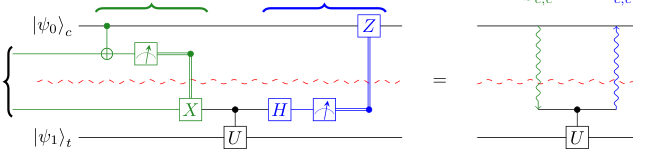
<figcaption class="paper-figure-caption"><b>Fig 2.</b> Figure 2. A gate teleportation protocol (telegate) using starting and ending processes. The same diagrammatic notation is used on the left-hand side and right-hand side as Fig. 1.</figcaption>
</figure>
<figure class="paper-figure-card">
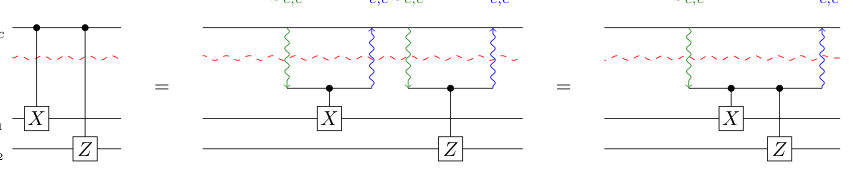
<figcaption class="paper-figure-caption"><b>Fig 3.</b> Figure 3. An example of gate packing the CX gate and the CZ gate, both with control qubit c and targeting qubits t1, t2 on the same QPU. On the left is the circuit that needs to be partitioned. In the middle is the circuit partition without gate packing, which requires two starting processes and therefore two e-bits. On the right is an equivalent partition where the CX and CZ gates are packed so that a single starting process (and single e-bit) is required.</figcaption>
</figure>
<figure class="paper-figure-card">
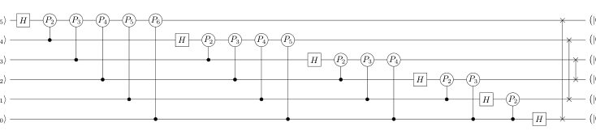
<figcaption class="paper-figure-caption"><b>Fig 4.</b> Figure 5. The traditional circuit for the quantum Fourier transform on 6 qubits, where the subscript k of a controlled phase gate defines a phase factor e2πi/2k as in [26].</figcaption>
</figure>
<figure class="paper-figure-card">
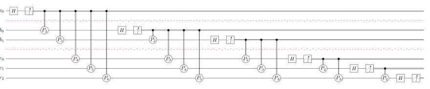
<figcaption class="paper-figure-caption"><b>Fig 5.</b> Figure 6. Semi-classical QFT circuit on 6 qubits. Note that the double lines represent classical information propagation and classical control.</figcaption>
</figure>
</div>

<p><strong>Summary.</strong> This paper tackles the critical problem of distributing the QFT circuit across multiple QPUs by minimizing entanglement overhead using a technique called gate packing. The authors prove that their specialized, optimal partitioning scheme significantly reduces the required e-bit count compared to general methods. This work provides both theoretical guarantees and empirical validation on quantum hardware for building scalable distributed quantum processors.</p>
<p><strong>Why it may be interesting.</strong> It provides a concrete, resource-aware compilation strategy for one of the most fundamental subroutines in quantum algorithms (QFT), directly addressing the engineering challenge of scaling quantum computation across multiple physical devices.</p>
<details>
<summary>Detailed structure</summary>
<p><strong>Main problem.</strong> The primary goal is to develop an optimal method for partitioning the Quantum Fourier Transform (QFT) circuit so that it can run efficiently on a distributed quantum system while minimizing required entanglement resources.</p>
<p><strong>Main result.</strong> The authors propose and prove an optimal gate-packing-based partitioning scheme for the QFT, demonstrating resource savings compared to general algorithms. This method achieves analytically proven lower bounds on the required e-bit count in bipartite cases.</p>
<p><strong>Method.</strong> The work employs circuit rewriting using quantum teleportation protocols (Teledata/Telegate) and introduces 'gate packing' to efficiently group multiple two-qubit gates into single entanglement operations. Theoretical proofs establish optimal qubit assignment strategies based on minimizing the total required e-bits.</p>
<p><strong>Model / system.</strong> The model is a distributed quantum computing architecture utilizing multiple Quantum Processing Units (QPUs) connected by entanglement channels, with the QFT circuit being the specific unitary operation analyzed. The analysis compares theoretical bounds derived from communication complexity ($Q_0$) against practical implementations on simulated and physical hardware.</p>
<p><strong>Key observables.</strong> e-bit count (the number of maximally entangled qubit pairs required), Average Fidelity ($F$), Circuit Depth, and Time taken for execution.</p>
<p><strong>Important parameters / regimes.</strong> Number of QPUs ($m$), total qubits ($n$), QPU capacities ($n_1, \dots, n_m$), and the constant ancilla limit (e.g., 1 or 2).</p>
<p><strong>Assumptions / limitations.</strong> The analysis often assumes access to necessary entanglement resources; comparisons are sometimes made between exact circuits and approximate versions generated by standard compilers like Pytket.</p>
<p><strong>Figures summary.</strong> Figures illustrate protocols like Teledata/Telegate, show comparisons of e-bit requirements (packed vs. non-packed), and present fidelity decay curves comparing naive partitioning against the proposed gate-packed scheme on simulated and physical hardware.</p>
<p><strong>Paper structure.</strong> The paper progresses from defining the problem (QFT distribution) to introducing advanced techniques like gate packing and detached gates, establishing theoretical lower bounds via communication complexity analysis, deriving optimal assignment theorems, and finally validating these results through both simulation and actual quantum hardware measurements.</p>
</details>
<details>
<summary>Abstract</summary>
<p>A promising avenue for scaling quantum computing is to connect quantum processing units (QPUs) by generating entanglement between them. This requires circuit partitioning: partially rewriting quantum circuits to run on a distributed quantum system using quantum teleportation protocols, while preserving the unitary operation implemented by the circuit. The key metric to minimize when partitioning is the e-bit count, defined as the number of maximally entangled qubit pairs that must be generated between QPUs. We focus on partitioning the quantum Fourier transform (QFT) circuit, which is widely used as a subroutine in quantum algorithms such as quantum phase estimation and arithmetic circuits. Specifically, we present a partitioning scheme based on optimal gate-packing, compare it against prior analytical partitioning schemes for the QFT, and evaluate it against partitions produced by general-purpose circuit partitioning algorithms. We further validate our approach by implementing the partitioned circuit on quantum hardware.</p>
</details>
<p><sub><a href="#top">↑ back to top</a></sub></p>
<h2 id="other-papers-5">Other papers (5)</h2>
<p><em>Papers from primary archives without highlighted authors or any topic match. Click to expand.</em></p>
<details>
<summary>Show other papers</summary>

<p><a id="paper-2606.19137"></a></p>
<h3 id="bulk-boundary-correspondence-of-11d-symmetric-gapped-phases"><a href="http://arxiv.org/abs/2606.19137v1">Bulk-boundary correspondence of (1+1)D symmetric gapped phases</a></h3>
<p><strong>Authors:</strong> Yizhou Ma, Gen Yue, Tian Lan<br>
<strong>Type:</strong> theory · <strong>Category:</strong> strongly correlated electrons · <strong>PDF:</strong> <a href="https://arxiv.org/pdf/2606.19137v1">https://arxiv.org/pdf/2606.19137v1</a><br>
<strong>Analysis basis:</strong> full PDF text, analyzed in chunks</p>
<div class="figure-strip-hint">↔ Scroll figures horizontally</div>
<div class="paper-figures-scroll">
<figure class="paper-figure-card">

<figcaption class="paper-figure-caption"><b>Fig 1.</b> Figure 1: Definition of Std, which will be called ReaDHR later.</figcaption>
</figure>
<figure class="paper-figure-card">

<figcaption class="paper-figure-caption"><b>Fig 2.</b> Figure 2: The Frobenius conditions ensure that scr(a) is a right Q-module map. Similarly, it is also a left Q-module map.</figcaption>
</figure>
<figure class="paper-figure-card">

<figcaption class="paper-figure-caption"><b>Fig 3.</b> Figure 4: Each oval denotes a lattice site, the red dashed lines denote the interactions. N ∈Repψ(G) on the boundary site N ⊗M ∗is a dangling edge mode.</figcaption>
</figure>
<figure class="paper-figure-card">

<figcaption class="paper-figure-caption"><b>Fig 4.</b> Figure 5: The bending isomorphism allows comparing ReaDHR(L) ⊠ReaBCond(K) to ReaBCond(L∨(K)).</figcaption>
</figure>
</div>
<p><strong>Summary.</strong> This theoretical work establishes a comprehensive bulk-boundary correspondence for one-dimensional gapped quantum phases with generalized symmetries. By employing operator algebras and advanced category theory, the authors rigorously prove that the bulk topological order can be mathematically derived from the structure of the boundary physics via the enriched center construction. This provides a powerful classification tool for understanding how edge states are dictated by the bulk material properties.</p>
<p><strong>Why it may be interesting.</strong> The rigorous mathematical machinery developed—connecting algebraic structures like centers of enriched categories to physical observables—provides a powerful, general tool for classifying topological phases beyond simple symmetry groups, which is highly relevant for understanding correlated electron systems.</p>
<details>
<summary>Detailed structure</summary>
<p><strong>Main problem.</strong> The paper develops a rigorous operator-algebraic framework to establish the bulk-boundary correspondence for $(1+1)$D gapped quantum phases possessing categorical symmetry.</p>
<p><strong>Main result.</strong> It proves that the enriched monoidal category describing the bulk topological structure is equivalent to the enriched center of the category describing the boundary physics. This provides a complete mathematical classification linking bulk and edge properties.</p>
<p><strong>Method.</strong> The methodology relies on working in the thermodynamic limit using $C^*$-algebras, constructing Hamiltonians via commuting-projector interactions, and employing advanced tools from enriched category theory (DHR bimodules, centers of categories).</p>
<p><strong>Model / system.</strong> The focus is on one-dimensional gapped quantum spin chains exhibiting categorical symmetry. The analysis uses abstract mathematical structures like unitary fusion categories ($\mathcal{C}$) and module categories ($\mathcal{M}$), rather than a single concrete Hamiltonian.</p>
<p><strong>Key observables.</strong> Ground states of constructed Hamiltonians, the boundary DHR category, and the bulk/boundary topological field theories (SymTFTs).</p>
<p><strong>Important parameters / regimes.</strong> The system is analyzed in the thermodynamic limit; symmetry structure is governed by the fusion category $\mathcal{C}$.</p>
<p><strong>Assumptions / limitations.</strong> The framework assumes the existence of a unitary fusion category and an indecomposable semisimple right module category, allowing for the construction of quasi-local algebras.</p>
<p><strong>Figures summary.</strong> Figure 6 summarizes the complete description of 1D symmetric gapped phases, relating four components: bulk SymTFT, boundary SymTFT, the category of boundary conditions ($ ext{BCond}$), and the underlying algebraic structures.</p>
<p><strong>Paper structure.</strong> The paper builds from general concepts in infinite lattice algebras (AF algebras) to specific constructions for fusion spin chains. It then systematically establishes equivalences between operator-algebraic descriptions of boundary physics (via DHR categories) and abstract categorical definitions, culminating in the central theorem relating bulk structure to the center of the boundary structure.</p>
</details>
<details>
<summary>Abstract</summary>
<p>We develop an operator-algebraic framework for boundary conditions and bulk-boundary correspondence in one-dimensional gapped phases with categorical symmetry. Working directly in the thermodynamic limit, we construct half-infinite fusion spin chains and commuting-projector boundary Hamiltonians from a unitary fusion category $\mathcal{C}$, an indecomposable semisimple right $\mathcal{C}$-module category $\mathcal{M}$, a Q-system $Q\in\mathcal{C}$ specifying the bulk phase, and a right $Q$-module $K\in\mathcal{M}_{Q}$, regarded as an object of $\mathcal{M}_{Q}^{\mathrm{op}}$, specifying the boundary. We prove that these Hamiltonians have unique ground states and that the resulting realization functor $\mathcal{M}_{Q}^{\mathrm{op}}\to\mathrm{BCond}$ is an equivalence, so simple boundary conditions are classified by simple objects of $\mathcal{M}_{Q}$ and general boundary conditions by their finite direct sums. We also give a microscopic formulation of the boundary symmetry topological field theory using DHR bimodules of the boundary quasi-local algebra. For a half-infinite fusion spin chain, the boundary DHR category is monoidally equivalent to $(\mathcal{C}_{\mathcal{M}}^{\vee})^{\mathrm{rev}}$, and the canonical action of the bulk DHR category on it agrees with the categorical action of $Z_1(\mathcal{C}^{\mathrm{rev}})$. Finally, we identify the action of the boundary DHR category on boundary conditions with the categorical action of $(\mathcal{C}_{\mathcal{M}}^{\vee})^{\mathrm{rev}}$ on $\mathcal{M}_{Q}^{\mathrm{op}}$. This yields a one-dimensional bulk-boundary correspondence: the enriched monoidal category describing the bulk is the enriched center of the enriched category describing the boundary.</p>
</details>
<p><sub><a href="#top">↑ back to top</a></sub></p>

<p><a id="paper-2606.19107"></a></p>
<h3 id="evidence-for-multiband-superconductivity-in-2h-nbses"><a href="http://arxiv.org/abs/2606.19107v1">Evidence for Multiband Superconductivity in 2H-NbSeS</a></h3>
<p><strong>Authors:</strong> K. Yadav, M. Lamba K. Bhattacharya, M. Majumder, S. Patnaik<br>
<strong>Type:</strong> both · <strong>Category:</strong> strongly correlated electrons · <strong>PDF:</strong> <a href="https://arxiv.org/pdf/2606.19107v1">https://arxiv.org/pdf/2606.19107v1</a><br>
<strong>Analysis basis:</strong> full PDF text, analyzed in chunks</p>
<div class="figure-strip-hint">↔ Scroll figures horizontally</div>
<div class="paper-figures-scroll">
<figure class="paper-figure-card">

<figcaption class="paper-figure-caption"><b>Fig 1.</b> FIG. 1. (a) Rietveld refinement of the PXRD pattern of 2H- NbSeS; the inset shows the crystal structure of the unit cell. (b) XRD pattern of a NbSeS single crystal showing only (00l) reflections. Inset (i) shows the Laue back-reflection pattern and inset (ii) the HRTEM image revealing the atomic lattice of 2H-NbSeS, overlaid with the simulated crystal structure projected along the ab-plane. (c) EDX spectrum recorded from a 2H-NbSeS single crystal, with the table summariz- ing the mean atomic composition of the constituent elements. The insets present the corresponding elemental distribution maps for the selected region.</figcaption>
</figure>
<figure class="paper-figure-card">

<figcaption class="paper-figure-caption"><b>Fig 2.</b> FIG. 2. (a) Zero-field electrical resistivity as a function of temperature, along with a Bloch-Gr¨uneisen fit in the metallic- state region. The inset shows an enlarged view of the su- perconducting transition at 6.3 K. (b) and (c) Temperature dependence of the upper critical fields H∥ab c2 and H⊥ab c2 ex- tracted from the field-dependent resistivity data [insets of (b) and (c)]. Solid and dashed curves represent different theoret- ical fits as described in the text.</figcaption>
</figure>
<figure class="paper-figure-card">

<figcaption class="paper-figure-caption"><b>Fig 3.</b> FIG. 3. (a) Temperature-dependent magnetization (ZFCW- FCW) measured in an applied field of 10 Oe with H ⊥ab. The inset shows the field-dependent magnetization (M-H loop) at 1.85 K. (b) and (c) Temperature dependence of the lower criti- cal field Hc1(T) extracted for H ∥ab and H ⊥ab, respectively [insets of (b) and (c)]. The dash-dotted blue lines correspond to single-gap s-wave fits and the solid red lines to two-gap s + s wave fits.</figcaption>
</figure>
<figure class="paper-figure-card">

<figcaption class="paper-figure-caption"><b>Fig 4.</b> FIG. 4. (a) Low-temperature penetration-depth varia- tion ∆λ(T) as a function of reduced temperature down to 0.25 Tc, fitted with exponential models [solid red line with 2∆0/kBTc = 4.08 and dot-dashed blue line with 2∆0/kBTc = 3.53]. The inset shows the variation of the rf penetration depth as a function of temperature in zero applied magnetic field. (b) Superfluid density ρs(T) = λ2(0)/λ2(T) derived from λ(T), fitted over the full temperature range using both single-gap and s + s wave models. The inset highlights the low-temperature region.</figcaption>
</figure>
<figure class="paper-figure-card">

<figcaption class="paper-figure-caption"><b>Fig 5.</b> FIG. 5. (a) Temperature dependence of the specific heat Cp(T) measured under various magnetic fields. The inset shows Cp/T versus T 2 along with the Debye-Sommerfeld fit (solid orange line). (b) Ce/T versus T at different magnetic fields; the inset shows the field dependence of the Sommerfeld coefficient γ(H). (c) Temperature dependence of the elec- tronic specific heat Ce(T) at zero field, fitted with single-gap s-wave and two-gap s + s wave models.</figcaption>
</figure>
</div>
<p><strong>Summary.</strong> This work investigates superconductivity in 2H-NbSeS, a material engineered to suppress CDW order. By analyzing critical fields, specific heat, and magnetic penetration depth across multiple probes, the authors conclusively demonstrate that the superconducting state requires a two-band model. This provides strong evidence for an intrinsic multiband pairing mechanism, distinguishing it from competing electronic instabilities.</p>
<p><strong>Why it may be interesting.</strong> The rigorous differentiation between intrinsic pairing mechanisms (multiband) and competing orders (CDW) using quantitative measurements is highly relevant for understanding complex many-body ground states in condensed matter physics.</p>
<details>
<summary>Detailed structure</summary>
<p><strong>Main problem.</strong> The primary challenge is distinguishing intrinsic multiband superconductivity from spurious effects caused by competing electronic orders, such as Charge Density Wave (CDW) formation, in layered superconductors.</p>
<p><strong>Main result.</strong> The superconducting properties of 2H-NbSeS are robustly described by a two-band model, indicating an intrinsic, strongly asymmetric multiband pairing mechanism rather than CDW-related artifacts.</p>
<p><strong>Method.</strong> A combination of advanced experimental measurements (critical fields, specific heat, penetration depth) and theoretical modeling (single-gap vs. two-band fitting) was employed to analyze the superconducting state.</p>
<p><strong>Model / system.</strong> The study focuses on single-crystalline 2H-NbSeS, a mixed-chalcogen analogue of 2H-NbSe2. The system is characterized by intrinsic substitutional disorder (Se/S), which suppresses long-range CDW order while preserving the layered crystal structure.</p>
<p><strong>Key observables.</strong> Upper and lower critical magnetic fields ($H_{c2}, H_{c1}$), superfluid density ($
ho_s(T)$), electronic specific heat ($C_e(T)$), and superconducting gap values ($\Delta_1, \Delta_2$).</p>
<p><strong>Important parameters / regimes.</strong> The in-plane upper critical field exceeds the weak-coupling Pauli limit; the analysis requires a dirty-limit two-band model with a large diffusivity ratio.</p>
<p><strong>Assumptions / limitations.</strong> It is assumed that random substitutional disorder effectively suppresses long-range CDW order, thereby isolating the intrinsic superconducting pairing mechanism for investigation.</p>
<p><strong>Figures summary.</strong> Figures show XRD patterns confirming crystal structure and stoichiometry; subsequent figures analyze $H_{c2}(T)$ curvature requiring a two-band fit, and $\Delta\lambda(T)$ and $C_e(T)$ data are used to confirm the necessity of a two-gap model.</p>
<p><strong>Paper structure.</strong> The paper progresses by first establishing the clean structural platform (disorder suppressing CDW), then using transport measurements ($H_{c2}$) to necessitate a two-band description, and finally confirming this multiband nature through multiple thermodynamic probes like specific heat and penetration depth ($\Delta\lambda$).</p>
</details>
<details>
<summary>Abstract</summary>
<p>The nature of superconductivity in 2H-NbSe2 has generated sustained debate in the recent past. While angle resolved photoemission spectroscopy data have been interpreted as evidence for multiband superconductivity, the data from scanning tunneling microscope experiments relate to strongly anisotropic single-band superconductivity. In the later case, the charge density wave (CDW) order mimics the multigap character. Because the CDW reconstructs the Fermi surface and modifies the superconducting gap distribution, disentangling intrinsic multiband pairing from CDW-related effects is challenging. To address this issue, we investigate single-crystalline 2H-NbSeS, a mixed-chalcogen analogue of 2H-NbSe2 in which random Se/S substitution suppresses long-range CDW order while preserving the layered crystal structure P63/mmc. The material becomes superconducting below 6.0 K with moderate magnetic anisotropy. The upper critical field exhibits a pronounced upward curvature that cannot be described within a single-band framework but is well captured by a dirty-limit two-band model with a large diffusivity ratio. This indicates strong band-dependent scattering. The in-plane upper critical field exceeds the weak-coupling Pauli limit. Measurements of the lower critical field, superfluid density, and electronic specific heat are consistent with an interpretation of a fully gapped superconducting state with two nodeless gaps of different magnitudes.</p>
</details>
<p><sub><a href="#top">↑ back to top</a></sub></p>

<p><a id="paper-2606.18515"></a></p>
<h3 id="exponentially-many-initializations-to-avoid-barren-plateaus"><a href="http://arxiv.org/abs/2606.18515v1">Exponentially many initializations to avoid barren plateaus</a></h3>
<p><strong>Authors:</strong> Ankit Kulshrestha, Ricard Puig, Diego García-Martín, Lukasz Cincio, Ilya Safro, Zoë Holmes, M. Cerezo<br>
<strong>Type:</strong> theory · <strong>Category:</strong> quantum information and computing · <strong>PDF:</strong> <a href="https://arxiv.org/pdf/2606.18515v1">https://arxiv.org/pdf/2606.18515v1</a><br>
<strong>Analysis basis:</strong> full PDF text, analyzed in chunks</p>
<div class="figure-strip-hint">↔ Scroll figures horizontally</div>
<div class="paper-figures-scroll">
<figure class="paper-figure-card">

<figcaption class="paper-figure-caption"><b>Fig 1.</b> Figure 1. Schematic picture of the main message of this work. Barren plateaus arise as an average-case consequence of exploring an exponentially large space, leading to concentration of loss functions and gradients. One way to avoid this problem is to restrict the dynamics to a smaller effective subspace, e.g., through shallow local structure, symmetries, or small Lie al- gebras; however, this can make the model more amenable to classical simulation. A different route is to use smart parame- ter initializations, which do not necessarily shrink the accessible space, but instead bias optimization toward special trainable pockets of the landscape. The tradeoff is then no longer only how to...</figcaption>
</figure>
<figure class="paper-figure-card">

<figcaption class="paper-figure-caption"><b>Fig 2.</b> Figure 2. Circuit ansatz. We consider a PQC composed of single-qubit Rx and Ry rotations followed by nearest-neighbor CZ entangling gates. The example shown corresponds to n = 6 qubits and L = 3 layers.</figcaption>
</figure>
<figure class="paper-figure-card">

<figcaption class="paper-figure-caption"><b>Fig 3.</b> Figure 3. Distribution of did(θ) for several initialization families and system sizes. We consider an L = 4 layered circuit (see Fig. 2), where the parameters are initialized i.i.d. from a uniform distribution Unif[−π, π], a Beta distribution Beta(α, β), and two Gaussian initializations N(0, σ), with σ = 1 and σ = 1/√n.</figcaption>
</figure>
<figure class="paper-figure-card">

<figcaption class="paper-figure-caption"><b>Fig 4.</b> Figure 4. Circuit ansatz for Max-Cut example. We con- sider a PQC composed of single-qubit Rz, Ry, Rz rotations followed by nearest-neighbor CZ entangling gates. The exam- ple shown corresponds to n = 6 qubits and L = 2 layers. Given that each Ry can be initialized using two distributions, there are 2nL choices, which we here schematically show by coloring gates according to which initialization was used.</figcaption>
</figure>
<figure class="paper-figure-card">

<figcaption class="paper-figure-caption"><b>Fig 5.</b> Figure 5. Distribution of local minima after training for Max-Cut problem. We show a histogram of the final expec- tation value for different system sizes.</figcaption>
</figure>
</div>
<p><strong>Summary.</strong> This work analyzes barren plateaus in VQAs by developing a first-moment diagnostic tool. It proves that avoiding these flat regions is non-unique, allowing for exponentially many distinct initialization strategies. The key takeaway is that choosing an initialization strategy becomes a new challenge: selecting the right trainable 'pocket' among many viable options.</p>
<p><strong>Why it may be interesting.</strong> It provides a deep theoretical understanding of the geometry of quantum optimization landscapes, suggesting that 'avoiding flatness' is not enough; one must also select the correct basin of attraction among many possibilities.</p>
<details>
<summary>Detailed structure</summary>
<p><strong>Main problem.</strong> The paper addresses the barren plateau phenomenon in Variational Quantum Algorithms (VQAs), which causes loss functions to become exponentially flat during training.</p>
<p><strong>Main result.</strong> It demonstrates that avoiding barren plateaus is highly non-unique, allowing for the construction of exponentially many inequivalent initialization strategies. Furthermore, these different initializations can lead the optimization process toward distinct local minima.</p>
<p><strong>Method.</strong> The analysis introduces a first-moment framework and uses operator diagnostics (like the expected Heisenberg-evolved operator gap) to characterize when an initialization escapes the fully concentrated barren-plateau fixed point.</p>
<p><strong>Model / system.</strong> The study focuses on Parameterized Quantum Circuits (PQCs) acting on $n$-qubit Hilbert spaces, where the goal is minimizing a loss function derived from quantum expectation values.</p>
<p><strong>Key observables.</strong> Expected Heisenberg-evolved operator gap ($\xi_{BP,\gamma}$), first moment coefficients ($a$ and $b$), and the squared derivative of the loss function ($\mathbb{E}_	heta \left[ rac{\partial L(	heta)}{\partial	heta} 
ight]^2$).</p>
<p><strong>Important parameters / regimes.</strong> The number of qubits ($n$), circuit depth ($L$), initialization width ($\varsigma$), and specific graph structures (e.g., constant-odd-degree graphs).</p>
<p><strong>Assumptions / limitations.</strong> The analysis often assumes the existence of a naïve parameter distribution causing BPs, or relies on simplifying assumptions about graph topologies and gate commutativity for deriving bounds.</p>
<p><strong>Figures summary.</strong> Figures illustrate schematic trade-offs between restricting dynamics vs. smart initialization; heatmaps show gradient magnitudes across qubits/layers for different initializations; contour plots visualize local gradient landscapes.</p>
<p><strong>Paper structure.</strong> The paper builds from defining the BP problem to introducing the first-moment diagnostic, proving existence theorems for exponentially many non-concentrating initializations, and finally showing that these distinct initializations lead to measurably different optimization behaviors.</p>
</details>
<details>
<summary>Abstract</summary>
<p>Barren plateaus are stated as an average-case phenomenon: pick an ansatz, initialize it naively, and concentration follows. This has led to the common view that a potential cure for barren plateaus is simply to initialize the parameters more carefully. Here we show that the situation is subtler. We introduce a first-moment framework that gives a simple operator-level diagnostic for when an initialization may escape the fully concentrated barren-plateau fixed point, and for comparing the biases induced by different initialization strategies. Our framework recovers several known initialization schemes such as identity and Gaussian initialization, but also shows that barren-plateau avoidance is highly non-unique. Indeed, many shifted, biased, and non-symmetric parameter distributions can avoid concentration, and these choices need not be equivalent. In fact, our results show that one can generate exponentially many families of inequivalent initialization strategies. Then, our numerics indicate that different first-moment-distinct initializations can lead to different attained minima, suggesting that avoiding barren plateaus via smart initializations can trade the exponential concentration problem for the challenge of selecting the right trainable pocket amongst many options.</p>
</details>
<p><sub><a href="#top">↑ back to top</a></sub></p>

<p><a id="paper-2606.18848"></a></p>
<h3 id="extracting-effective-scaling-exponents-in-finite-size-hyperuniform-systems"><a href="http://arxiv.org/abs/2606.18848v1">Extracting effective scaling exponents in finite-size hyperuniform systems</a></h3>
<p><strong>Authors:</strong> Yuan Liu, Xurui Li, Jianxiang Tian, Xunwang Yan, Ge Zhang<br>
<strong>Type:</strong> theory · <strong>Category:</strong> disordered systems and neural networks · <strong>PDF:</strong> <a href="https://arxiv.org/pdf/2606.18848v1">https://arxiv.org/pdf/2606.18848v1</a><br>
<strong>Analysis basis:</strong> full PDF text, analyzed in chunks</p>
<div class="figure-strip-hint">↔ Scroll figures horizontally</div>
<div class="paper-figures-scroll">
<figure class="paper-figure-card">

<figcaption class="paper-figure-caption"><b>Fig 1.</b> FIG. 1. Sensitivity of the ensemble-averaged 𝑆(𝑘) fit to the fitting window for the representative system with 𝑁௣= 200 and 𝛼୲୦ୣ୭୰୷= 3.0. Panel (a) shows 𝑆(𝑘) as a function of 𝑘𝑎 on a linear</figcaption>
</figure>
<figure class="paper-figure-card">

<figcaption class="paper-figure-caption"><b>Fig 2.</b> FIG. 3. Regularized low-𝑘 fitting window for the representative system with 𝑁௣= 200 and 𝛼୲୦ୣ୭୰୷= 3.0. Panel (a) shows the ensemble-averaged 𝑆(𝑘) as a function of 𝑘𝑎 on a linear scale.</figcaption>
</figure>
<figure class="paper-figure-card">

<figcaption class="paper-figure-caption"><b>Fig 3.</b> Figure 3 shows the position of the selected window on the ensemble-averaged</figcaption>
</figure>
<figure class="paper-figure-card">

<figcaption class="paper-figure-caption"><b>Fig 4.</b> Figure 4 shows three representative cases, 𝛼୲୦ୣ୭୰୷=0.5, 1.0 and 3.0 corresponding</figcaption>
</figure>
<figure class="paper-figure-card">

<figcaption class="paper-figure-caption"><b>Fig 5.</b> FIG. 4. Number-variance tail-platform identification for three representative systems. The cases 𝛼୲୦ୣ୭୰୷=0.5, 1.0 and 3.0 correspond to Class III-like, Class II-like, and Class I-like diagnoses,</figcaption>
</figure>
</div>
<p><strong>Summary.</strong> The paper addresses the difficulty of measuring scaling exponents ($\alpha$) in finite hyperuniform systems by developing a sophisticated, multi-method protocol. It combines analysis from structure factors, number variance, and dynamic spreadability to yield a robust 'effective' exponent estimate. This methodology is vital for accurately characterizing structural correlations in real or simulated disordered materials.</p>
<p><strong>Why it may be interesting.</strong> This work provides advanced analytical tools for characterizing long-range correlations in disordered materials, which is crucial for understanding the physics of amorphous solids or colloidal suspensions where true asymptotic measurements are impossible.</p>
<details>
<summary>Detailed structure</summary>
<p><strong>Main problem.</strong> The core challenge is accurately estimating the effective scaling exponent ($\alpha$) that characterizes the suppression of long-wavelength density fluctuations in finite-size hyperuniform point configurations.</p>
<p><strong>Main result.</strong> A robust, method-aware protocol combining structure factor analysis, number variance diagnosis, and spreadability measurements provides a stable estimate for $\alpha$ by assessing internal consistency across different diagnostic tools.</p>
<p><strong>Method.</strong> The authors developed a joint empirical estimator that synthesizes results from three complementary methods: regularized low-$k$ window screening on $S(k)$, Class-like diagnosis from number variance, and plateau-window analysis of the spreadability excess $E(	au)$.</p>
<p><strong>Model / system.</strong> The study focuses on theoretical models of hyperuniform point configurations in 2D, often generated by constraining the structure factor $S(k)$ to follow a prescribed power law, allowing for systematic testing across various target exponents $\alpha$.</p>
<p><strong>Key observables.</strong> Effective scaling exponent ($\alpha$), Structure Factor ($S(k)$), Number Variance ($\sigma^2(R)$), and Spreadability Excess ($E(	au) = S(\infty) - S(t)$).</p>
<p><strong>Important parameters / regimes.</strong> The analysis is highly dependent on the accessible length scales (low-$k$ cutoff, window size $R$, time $   au$) due to finite-size effects.</p>
<p><strong>Assumptions / limitations.</strong> It assumes that by combining multiple diagnostic methods and implementing rigorous window selection protocols, one can extract a stable <em>effective</em> exponent even when true thermodynamic limits are inaccessible.</p>
<p><strong>Figures summary.</strong> Figures illustrate the sensitivity of extracted $\alpha$ to fixed fitting windows (Table II) and demonstrate how different physical observables ($S(k)$, $E(	au)$) require specific intermediate-range analysis windows to yield consistent results.</p>
<p><strong>Paper structure.</strong> The paper systematically introduces the limitations of individual methods, proposes a unified protocol by combining three distinct analyses ($S(k)$, $\sigma^2(R)$, $E(	au)$), and validates this combined approach using benchmark systems and independently generated physical models.</p>
</details>
<details>
<summary>Abstract</summary>
<p>Hyperuniform systems strongly suppress long-wavelength density fluctuations, which is quantitatively characterized by the small-wavenumber scaling. In finite samples, however, accurately estimating the hyperuniformity exponent α can be challenging. The inferred value depends strongly on the range of length scales accessible in the measurement, finite-size effects, and the specific characterization method employed, whether based on Fourier-space structure factors, real-space density fluctuations, or dynamical probes such as diffusion spreadability. In particular, the structure-factor method provides the most direct estimate of α, but is sensitive to empirical low-k fitting cutoffs. The number-variance method offers a real-space Class-like diagnosis, but contributes a numerical exponent only when the finite-size data retain Class III-like scaling information. The spreadability method provides a smoother dynamic estimate and reduces configuration-level fluctuations, but requires a physically admissible long-time fitting window. Here, we develop a practical method-aware protocol for robust estimation of the effective scaling exponent α in finite-size hyperuniform point configurations, combining three complementary methods with distinct roles. Our protocol summarizes the method-specific estimates through a joint empirical estimator and reports the internal dispersion among the participating methods to determine the optimal estimate.</p>
</details>
<p><sub><a href="#top">↑ back to top</a></sub></p>

<p><a id="paper-2606.18422"></a></p>
<h3 id="gatekeepers-and-hallucinations-a-layered-evaluation-framework-for-llm-driven-quantum-circuit-generation"><a href="http://arxiv.org/abs/2606.18422v1">Gatekeepers and Hallucinations: A Layered Evaluation Framework for LLM-Driven Quantum Circuit Generation</a></h3>
<p><strong>Authors:</strong> Christopher Coleman, Sharon Marfatia<br>
<strong>Type:</strong> theory · <strong>Category:</strong> quantum information and computing · <strong>PDF:</strong> <a href="https://arxiv.org/pdf/2606.18422v1">https://arxiv.org/pdf/2606.18422v1</a><br>
<strong>Analysis basis:</strong> full PDF text, analyzed in chunks</p>
<div class="figure-strip-hint">↔ Scroll figures horizontally</div>
<div class="paper-figures-scroll">
<figure class="paper-figure-card">

<figcaption class="paper-figure-caption"><b>Fig 1.</b> FIG. 1: System architecture, circuit structure, and screening overview. (A) Agentic pipeline schematic showing tool-mediated Materials Project retrieval via MCP server, multi-agent orchestration (Supervisor, Coordinator, DFT, and Structure agents), Amazon Braket circuit execution, and the generative AI model pool evaluated in this work. (B) Schematic VQE circuit for H2/STO-3G/Jordan–Wigner/UCCSD (mp-241) illustrating how Materials Project data encodes into gate structure: bond length and spin state determine the Hartree–Fock reference initialization; orbital count and electron number determine the singles and doubles excitation layers; the measurement layer feeds the classical optimizer....</figcaption>
</figure>
<figure class="paper-figure-card">

<figcaption class="paper-figure-caption"><b>Fig 2.</b> FIG. 2: Circuit fidelity and ansatz classification (H2/STO-3G/JW/UCCSD, mp-241). (A) Ansatz classification per model from code inspection. Colour encodes failure detectability: pale red = silent (output looks valid), pale blue = runtime (requires execution to detect), grey = overt (visible in output). HF ref. and correct molecule are binary checks. Entries for Llama 3 70B and DeepSeek R1 correspond to harness-substituted templates rather than model generations (Sec. V A, Harness audit). (B) Variational parameter count, circuit depth, and CX gate count for models producing numeric output, normalised to the reference values (dashed line; params = 3, analytic; depth = 73 and CX = 24, Qiskit...</figcaption>
</figure>
<figure class="paper-figure-card">

<figcaption class="paper-figure-caption"><b>Fig 3.</b> FIG. 3: Design entropy and temperature stability (model-reported metrics). (A) Normalized design entropy by model and ansatz family, computed from the empirical distribution of distinct (depth, two-qubit gate count, parameter count) tuples across repeated Prompt 2 v3 runs (crystalline silicon, mp-149). Higher entropy indicates broader exploration; lower entropy indicates template-driven generation. (B) Temperature stability of Claude Sonnet 4.5 across T ∈{0.1, 0.3, 0.5, 0.7, 1.0} (Prompt 1, H2/mp-241, n = 5 runs). Left axis: structural similarity to the T = 1.0 reference (green line). Right axis: variation from the canonical template (red bars). All outputs pass a functional checklist of 8...</figcaption>
</figure>
<figure class="paper-figure-card">

<figcaption class="paper-figure-caption"><b>Fig 4.</b> FIG. 4: AWS service architecture for the QMI multi-agent platform. Numbered components correspond to the request flow described in the text. (1–3) User traffic enters via Amazon CloudFront (with AWS Shield and Certificate Manager for security) and is routed through an Application Load Balancer to the Elastic Beanstalk container. (4–6) Inside the EC2 instance, a Docker-containerised Streamlit application hosts the Strands Agents runtime. (7–8) Amazon Cognito handles user authentication; AWS Secrets Manager provides secure credential storage for all API keys. (9–10) The Supervisor Agent routes queries to Amazon Bedrock, which provides access to all eight foundation models evaluated in this...</figcaption>
</figure>
</div>
<p><strong>Summary.</strong> This paper introduces a comprehensive, multi-layered evaluation framework designed to rigorously test LLMs generating quantum circuits for chemistry simulations. It moves beyond checking if code runs by assessing physical validity, structural consistency (design entropy), and adherence to known chemical principles. The findings emphasize that robust validation infrastructure is as critical as the models themselves for reliable deployment.</p>
<p><strong>Why it may be interesting.</strong> This work directly addresses the reliability bottleneck for integrating advanced AI tools into computational physics pipelines, providing necessary validation metrics beyond simple functional testing.</p>
<details>
<summary>Detailed structure</summary>
<p><strong>Main problem.</strong> The core challenge is developing robust evaluation methods for Large Language Models (LLMs) when they are tasked with generating complex, executable quantum circuits for scientific simulations.</p>
<p><strong>Main result.</strong> A layered evaluation framework incorporating gatekeeper rubrics, circuit fidelity checks against reference values, and design entropy proves necessary to reliably deploy LLM-assisted quantum circuit generation in practice.</p>
<p><strong>Method.</strong> The authors propose a three-part validation system: (1) A rubric screening across seven criteria; (2) Fidelity analysis comparing generated circuits to known analytical/reference implementations; and (3) Design entropy measurement for behavioral consistency.</p>
<p><strong>Model / system.</strong> The focus is on Variational Quantum Eigensolvers (VQE) applied to molecular systems, specifically using the $   ext{H}_2/   ext{STO-3G}/    ext{Jordan–Wigner}/ ext{UCCSD}$ mapping. The evaluation platform itself is an agentic pipeline integrating LLMs with quantum chemistry workflows.</p>
<p><strong>Key observables.</strong> Five failure modes (e.g., geometry hallucination, nonexistent API usage), rubric scores (0-4), circuit depth/gate counts, and design entropy values.</p>
<p><strong>Important parameters / regimes.</strong> The fidelity of the generated ansatz relative to analytical expectations; temperature ($T$) for testing model stability.</p>
<p><strong>Assumptions / limitations.</strong> The framework assumes that LLM failures can be categorized structurally rather than being tied to a specific model architecture. A significant limitation noted is the reliance on single-rater scoring for rubrics.</p>
<p><strong>Figures summary.</strong> Figures illustrate the system architecture, VQE circuits, rubric heatmaps showing model performance across criteria, and radar plots/graphs detailing design entropy and temperature stability of generated code.</p>
<p><strong>Paper structure.</strong> The paper introduces the problem space (LLMs in quantum workflows), details the layered evaluation framework components (gatekeeper, fidelity check, entropy), presents empirical results using multiple models on molecular systems, and concludes with a discussion on infrastructure auditing and future improvements.</p>
</details>
<details>
<summary>Abstract</summary>
<p>As large language models (LLMs) become embedded in quantum simulation workflows (IDE copilots, notebook assistants, agentic pipelines), evaluation must move beyond functional correctness to anticipate and catch structured failures before they propagate through expensive pipelines. We present a layered evaluation framework for materials-informed Variational Quantum Eigensolver (VQE) circuit generation: (i) a gatekeeper screening rubric across seven physical and framework criteria; (ii) a circuit fidelity analysis comparing model outputs against analytical and reference-implementation values for H2/STO-3G/Jordan-Wigner/UCCSD, with ansatz classification and gate-composition breakdown; and (iii) design entropy, a run-to-run behavioral consistency metric. We surface a taxonomy of five distinct LLM failure modes (geometry hallucination, nonexistent API usage, runtime integration failures, constraint violations, and plausible-but-unverifiable output), each with distinct detectability profiles and structural to the task rather than to any one model. A forensic audit of the evaluation platform's own source code further establishes that two apparent model failures originated in the harness through silent fallback-template substitution, demonstrating that evaluation infrastructure belongs inside the same trust boundary as the models it tests. Applied across multiple foundation models on a Materials Project integrated pipeline, the framework shows that gatekeeper-style validation is necessary, not optional, for reliable deployment.</p>
</details>
<p><sub><a href="#top">↑ back to top</a></sub></p>
</details>
<h2 id="secondary-cond-mat-archives">Secondary cond-mat archives</h2>
<p><em>Papers from cond-mat.mtrl-sci, mes-hall, other, soft, supr-con. These archives are de-prioritized — they appear at the end regardless of relevance score.</em></p>
<h3 id="relevant-in-secondary-archives-24">Relevant in secondary archives (24)</h3>

<p><a id="paper-2606.19171"></a></p>
<h3 id="cavity-enhanced-superconductivity"><a href="http://arxiv.org/abs/2606.19171v1">Cavity Enhanced Superconductivity</a></h3>
<p><strong>Authors:</strong> Hanxiang Zhang, Zexin Feng, I-Te Lu, Zhiwei Li, Songhao Guo, Qiuyu Shang, Dening Luan, Mingcheng Panmai, Kenji Watanabe, Takashi Taniguchi, Angel Rubio, Weibo Gao<br>
<strong>Type:</strong> experiment · <strong>Category:</strong> other · <strong>PDF:</strong> <a href="https://arxiv.org/pdf/2606.19171v1">https://arxiv.org/pdf/2606.19171v1</a><br>
<strong>Analysis basis:</strong> full PDF text, analyzed in chunks
<strong>Topic relevance:</strong> 🔥 <code>analog quantum simulation</code> <strong>4/5</strong> · 🔥 <code>correlated cavity matter</code> <strong>4/5</strong> · <code>driven-dissipative phase transition</code> <strong>3/5</strong> · <code>methods for driven-dissipative</code> <strong>3/5</strong> · <code>quantum optics experiment</code> <strong>3/5</strong> · <code>QC/QI experiment</code> <strong>2/5</strong> · <code>non-equilibrium dynamics</code> <strong>2/5</strong> · <code>spintronics-quantum-optics interface</code> <strong>2/5</strong> · <code>Keldysh / 2PI / non-Gaussian methods</code> <strong>1/5</strong> · <code>Kondo &amp; dissipative impurity</code> <strong>1/5</strong> · <code>Tavis-Cummings &amp; cavity-many-emitter</code> <strong>1/5</strong> · <code>correlated / nonlocal dissipation</code> <strong>1/5</strong> · <code>entanglement &amp; information structure</code> <strong>1/5</strong> · <code>exotic spin models in light-matter</code> <strong>1/5</strong> · <code>interference shaping light</code> <strong>1/5</strong> · <code>non-equilibrium universality</code> <strong>1/5</strong></p>
<div class="figure-strip-hint">↔ Scroll figures horizontally</div>
<div class="paper-figures-scroll">
<figure class="paper-figure-card">

<figcaption class="paper-figure-caption"><b>Fig 1.</b> Figure 1 | Enhancement of superconductivity in NbSe2 coupled to a complementary split-</figcaption>
</figure>
<figure class="paper-figure-card">

<figcaption class="paper-figure-caption"><b>Fig 2.</b> Figure 2 | Dependence of superconducting enhancement on the local cavity</figcaption>
</figure>
<figure class="paper-figure-card">

<figcaption class="paper-figure-caption"><b>Fig 3.</b> Figure 3 | Dependence of superconducting enhancement on the frequency of CSRR. a,</figcaption>
</figure>
</div>

<p><strong>Summary.</strong> The authors experimentally demonstrate that coupling a superconductor ($   ext{NbSe}_2$) to an engineered terahertz cavity (CSRR) can enhance its critical temperature. By tuning the cavity resonance near $2 	ext{ THz}$, they achieved up to a 10% increase in $T_c$, establishing cavity engineering as a powerful tool for tailoring quantum materials.</p>
<p><strong>Why it may be interesting.</strong> This work directly bridges cavity quantum electrodynamics principles into condensed matter physics by using engineered electromagnetic environments to tune fundamental superconducting properties, which is highly relevant for open quantum systems research.</p>
<details>
<summary>Detailed structure</summary>
<p><strong>Main problem.</strong> To experimentally demonstrate that vacuum electromagnetic fluctuations, controlled via cavity engineering, can enhance superconductivity in quantum materials.</p>
<p><strong>Main result.</strong> The superconducting transition temperature ($T_{c,0}$) of few-layer $    ext{NbSe}_2$ increased by approximately 10% when coupled to a terahertz cavity resonant at $2.04 	ext{ THz}$.</p>
<p><strong>Method.</strong> Transport measurements (R-T curves) were performed on superconducting films integrated with a complementary split-ring resonator (CSRR) structure, combined with field simulations.</p>
<p><strong>Model / system.</strong> The system involves few-layer niobium diselenide ($ ext{NbSe}_2$), a van der Waals superconductor, coupled to a $   ext{THz}$ cavity formed by a CSRR. The study probes the interaction between superconductivity and local electromagnetic fields.</p>
<p><strong>Key observables.</strong> Superconducting transition temperature ($T_{c,0}$), lower critical field ($H_{c1}$), and the change in $T_{c,0}$ ($\Delta T_c$).</p>
<p><strong>Important parameters / regimes.</strong> Resonant frequency of the cavity (e.g., $2.04 	ext{ THz}$), local electric field strength ($\sim 0.8 	ext{ V/m}$), and material thickness.</p>
<p><strong>Assumptions / limitations.</strong> The enhancement is attributed to the resonant electromagnetic environment, after rigorously ruling out contributions from sample inhomogeneity or charge density wave (CDW) effects via control experiments.</p>
<p><strong>Figures summary.</strong> Figures show $R$-$T$ curves demonstrating enhanced $T_{c,0}$ at specific cavity resonances ($2.04 	ext{ THz}$) compared to baseline measurements, and plots illustrating the spatial dependence of this enhancement across the cavity field profile.</p>
<p><strong>Paper structure.</strong> The paper establishes the problem by noting previous suppression results, then presents the experimental setup using $ ext{NbSe}_2$/CSRR. It systematically measures $T_{c,0}$ as a function of location (spatial mapping) and resonance frequency (spectral mapping), concluding that optimal enhancement occurs near $2 	ext{ THz}$.</p>
</details>
<details>
<summary>Abstract</summary>
<p>Vacuum electromagnetic fluctuations have recently emerged as a promising means of controlling collective quantum phases. Although cavity-induced modifications of superconductivity have been widely predicted, experimental studies have so far reported only suppression of superconducting properties. Here, by carefully tuning a terahertz cavity to resonate with key phononic modes in few-layer niobium diselenide (NbSe2), we demonstrate cavity-enhanced superconductivity in few-layer NbSe2 coupled to a complementary split-ring resonator. In trilayer NbSe2, the superconducting transition temperature increases by ~10%, from 3.02 K to 3.41 K, when coupled to a cavity resonant at 2.04 THz. The enhancement exhibits a clear spatial dependence following the cavity field profile and a non-monotonic frequency dependence, with maximal enhancement near 2 THz. These results provide experimental evidence that vacuum electromagnetic fields can enhance superconductivity and establish cavity engineering as a powerful platform for tailoring quantum materials.</p>
</details>
<p><sub><a href="#top">↑ back to top</a></sub></p>

<p><a id="paper-2606.18493"></a></p>
<h3 id="dynamical-axion-quasiparticles-an-open-quantum-system"><a href="http://arxiv.org/abs/2606.18493v1">Dynamical axion quasiparticles: an open quantum system</a></h3>
<p><strong>Authors:</strong> Daniel Boyanovsky<br>
<strong>Type:</strong> theory · <strong>Category:</strong> statistical mechanics · <strong>PDF:</strong> <a href="https://arxiv.org/pdf/2606.18493v1">https://arxiv.org/pdf/2606.18493v1</a><br>
<strong>Analysis basis:</strong> full PDF text, analyzed in chunks
<strong>Topic relevance:</strong> 🔥 <code>methods for driven-dissipative</code> <strong>4/5</strong> · 🔥 <code>non-equilibrium dynamics</code> <strong>4/5</strong> · <code>Keldysh / 2PI / non-Gaussian methods</code> <strong>3/5</strong> · <code>correlated / nonlocal dissipation</code> <strong>3/5</strong> · <code>driven-dissipative phase transition</code> <strong>3/5</strong> · <code>non-equilibrium universality</code> <strong>2/5</strong> · <code>Kondo &amp; dissipative impurity</code> <strong>1/5</strong> · <code>analog quantum simulation</code> <strong>1/5</strong> · <code>exotic spin models in light-matter</code> <strong>1/5</strong> · <code>scars &amp; prethermalization</code> <strong>1/5</strong></p>
<div class="figure-strip-hint">↔ Scroll figures horizontally</div>
<div class="paper-figures-scroll">
<figure class="paper-figure-card">

<figcaption class="paper-figure-caption"><b>Fig 1.</b> Figure 1: Ip(t) for ⃗q = 0; β = 1; t ∈[0, 20] with three upper cutoffs. (a) Λp = 1.5; (b) Λp = 2; (c) Λp = 3,</figcaption>
</figure>
<figure class="paper-figure-card">

<figcaption class="paper-figure-caption"><b>Fig 2.</b> Figure 2: Ic(t) (red) and Iz (green dashed) for ⃗q = 0; β = 1 and the four cutoffcombinations: (a) [Λp, Λmax] =</figcaption>
</figure>
<figure class="paper-figure-card">

<figcaption class="paper-figure-caption"><b>Fig 3.</b> Figure 3: I+(t) with Eφ(⃗q) ≡ p</figcaption>
</figure>
<figure class="paper-figure-card">

<figcaption class="paper-figure-caption"><b>Fig 4.</b> Figure 4: Np(t) with Eφ(⃗q) ≡ p</figcaption>
</figure>
<figure class="paper-figure-card">

<figcaption class="paper-figure-caption"><b>Fig 5.</b> Figure 5: Np(t) with Eφ(⃗q) ≡ p</figcaption>
</figure>
</div>

<p><strong>Summary.</strong> The paper analyzes the time evolution of dynamical axion quasiparticles coupled to a photon bath using open quantum system formalisms. By deriving and comparing results from a Quantum Master Equation (QME) with those from quantum many-body linear response, it reveals non-Markovian transient effects like anti-Zeno dynamics. This work provides a unified theoretical framework for understanding dissipation in topological materials.</p>
<p><strong>Why it may be interesting.</strong> This work is highly relevant as it tackles non-equilibrium dynamics in topological systems by bridging two powerful theoretical tools—open quantum system master equations and many-body linear response theory—to study transient phenomena.</p>
<details>
<summary>Detailed structure</summary>
<p><strong>Main problem.</strong> The study investigates the non-equilibrium dynamics of emergent dynamical axion quasiparticles (DAQ) coupled to a photon bath via a Chern-Simons term, treating it as an open quantum system.</p>
<p><strong>Main result.</strong> The analysis establishes a direct bridge between the Quantum Master Equation (QME) approach and quantum many-body linear response theory, revealing transient non-Markovian effects like anti-Zeno dynamics.</p>
<p><strong>Method.</strong> The authors derive and analyze the time evolution using a QME derived with only a partial Markov approximation, comparing it rigorously to results from quantum many-body linear response theory.</p>
<p><strong>Model / system.</strong> The system involves DAQ quasiparticles coupled to an electromagnetic bath via a Chern-Simons term. The dynamics are modeled by deriving and solving the reduced density matrix evolution equation (QME).</p>
<p><strong>Key observables.</strong> Coherences, population of the DAQ condensate, topological susceptibility ($\chi_t$), and the expectation value of the induced Chern-Simons density.</p>
<p><strong>Important parameters / regimes.</strong> Transient time scales are crucial; early time dynamics exhibit quantum anti-Zeno effects, violating Fermi's Golden rule and detailed balance.</p>
<p><strong>Assumptions / limitations.</strong> The primary approximations include using a partial Markov approximation in the QME and assuming weak coupling ($g^2$ order) when applying factorization techniques from linear response theory.</p>
<p><strong>Figures summary.</strong> Figures illustrate the time evolution of rate integrals, showing the transition from early-time oscillatory behavior to long-time secular growth consistent with different theoretical limits.</p>
<p><strong>Paper structure.</strong> The paper progresses by first setting up the open quantum system framework (QME), then deriving equivalent equations using linear response theory, and finally analyzing the resulting time evolution in multiple regimes (transient vs. long-time) to confirm consistency across methods.</p>
</details>
<details>
<summary>Abstract</summary>
<p>We study the non-equilibrium dynamics of emergent dynamical axion quasiparticles (DAQ) coupled to a photon bath in equilibrium via a Chern-Simons term as a quantum open system. A quantum master equation (QME) is derived up to second order in this coupling implementing only a \emph{partial} Markov approximation, allowing time dependent rates in the Lindblad (QME). These are determined by the equilibrium correlation functions of the Chern-Simons density, and their time dependence allows us to explore transient dynamics in coherences and population: the formation of the quasiparticle on short time scales and its decay, and the build-up of population with an effective time dependent rate. Early time evolution features quantum \emph{anti} Zeno dynamics with enhanced quasiparticle decay and population growth. These phenomena describe transient violations of Fermi's Golden rule and of \emph{detailed balance}, and are distinct \emph{non-Markovian} effects directly related to the spectral density of the Chern-Simons correlators. We obtain the equation of motion of coherent (DAQ) condensates both with the (QME) and with quantum many body linear response establishing a direct bridge between both methods. As a corollary we obtain the expectation value of the Chern-Simons density \emph{induced} by a (DAQ) condensate in linear response, the topological susceptibility is shown to be proportional to the (DAQ) many body self-energy. We provide a Feynman diagram-based interpretation of approximations invoked in the (QME) and corrections from system-bath correlations in higher order.</p>
</details>
<p><sub><a href="#top">↑ back to top</a></sub></p>
<hr>
<p>
<a href="index.html">← Index</a>
 · <a href="papers_03.html">← Previous</a> · <a href="papers_05.html">Next →</a>
</p>
<hr>

</body>
</html>
